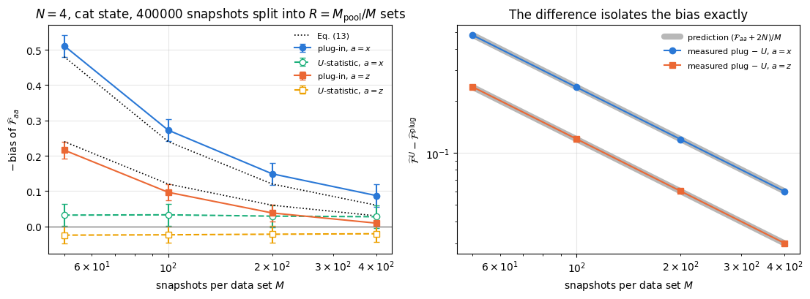
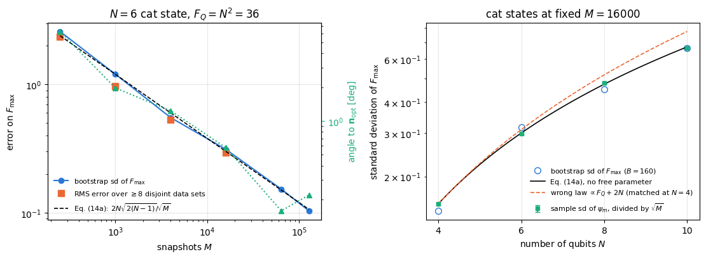
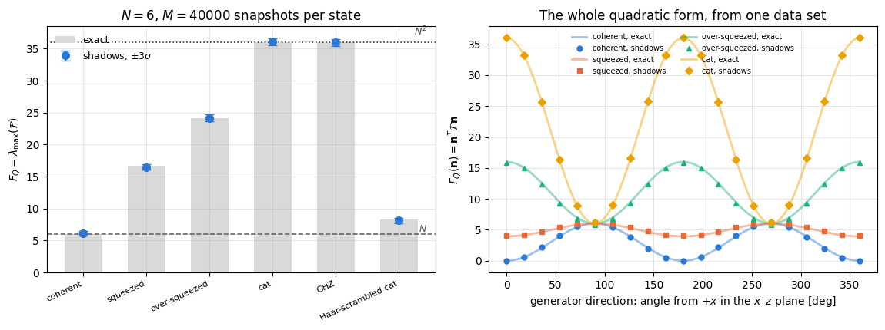
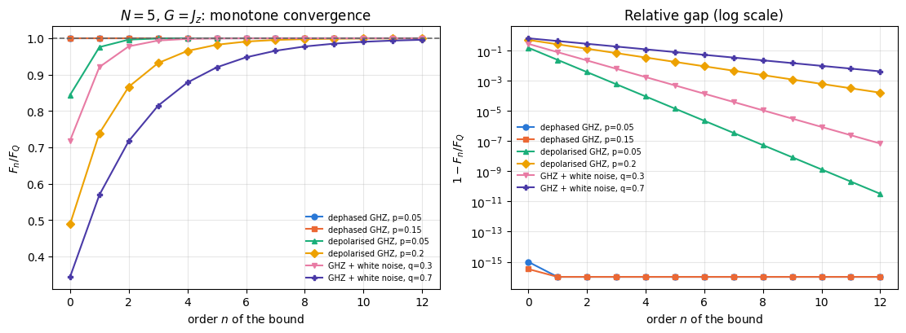
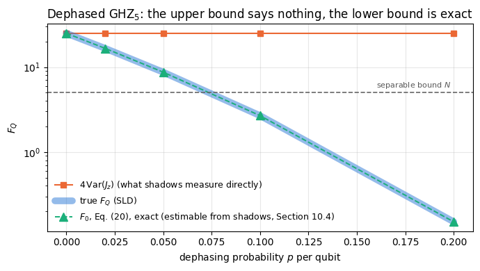

Everything Chapter 10 has computed so far started from a state vector stored in a computer. An experiment does not have one. It has a machine that prepares a state, and a detector that produces bit strings. The question of this notebook is therefore the practical one:
Given a laboratory that can rotate each qubit and measure it, how many measurements does it take to know the quantum Fisher information of the state it just prepared, and with what error bar?
The answer matters for experiments. \(F_Q>N\) certifies entanglement, \(F_Q>kN\) certifies that at least \(k+1\) particles are genuinely entangled, and the same number carries an operational promise: a phase uncertainty \(\Delta\theta\ge1/\sqrt{\nu F_Q}\) after \(\nu\) repetitions of the interferometer. A claim of “entanglement depth \(12\)” based on the quantum Fisher information is a claim about a measured\(F_Q\) with a measured uncertainty, and it is only as good as the statistics behind it.
The obstacle is that \(F_Q\) is a nonlinear function of the state. Quantum mechanics gives unbiased estimators of linear functionals \(\mathrm{Tr}(\rho O)\) directly, and nothing else. There are two ways out, and both appear below.
For a pure state and a collective generator \(G=\mathbf n\cdot\mathbf J\) the nonlinearity is mild: \(F_Q=4\,\mathrm{Var}(G)=4\left(\langle G^2\rangle-\langle G\rangle^2\right)\) involves only one- and two-body Pauli expectation values — \(O(N^2)\) numbers, each of weight at most \(2\) — plus one squared mean. Classical shadows (notebook 24) estimate all of them from a single data set, with a variance that does not grow with \(N\). The squared mean is the only nonlinear part, it biases the naive estimator by a computable amount, and a \(U\)-statistic removes the bias exactly.
For a mixed state\(4\,\mathrm{Var}(G)\) is only an upper bound on \(F_Q\), and it can be far from it: we will exhibit a state whose \(4\,\mathrm{Var}(J_z)\) is \(N^2\) while its true \(F_Q\) is \(0.15\). What randomised measurements can still deliver is a converging series of lower bounds\(F_0\le F_1\le\cdots\le F_Q\), each a polynomial in \(\rho\), which we derive from a geometric series and verify against the exact symmetric-logarithmic-derivative value.
Road map.
Section 3 is a one-page recap of classical shadows: the protocol, the single-snapshot estimator of a Pauli string, and the \(3^k\) variance law.
Section 4 derives the \(3\times3\) quantum Fisher information matrix in terms of \(\langle\sigma^a_i\rangle\) and \(\langle\sigma^a_i\sigma^b_j\rangle\), and counts the observables.
Section 5 implements the estimator twice: once literally, as a sum over \(O(N^2)\) Pauli strings, and once in a form that needs only six numbers per snapshot regardless of \(N\). The two agree to machine precision.
Section 6 derives the bias of the plug-in estimator, \(-\left(\mathcal{F}_{aa}+2N\right)/M\) exactly, and removes it.
Section 7 puts bootstrap error bars on the whole matrix, derives the per-snapshot standard deviation of the cat-state estimate, and measures the statistical error of \(F_{\max}\) and of the optimal generator direction against \(M\) and against \(N\).
Section 8 applies the machinery to a coherent state, to three one-axis-twisting states, to GHZ, and to a Haar-scrambled cat of notebook 35.
Section 9 turns the variance into a snapshot budget: how many measurements are needed to certify \(F_Q>N\) and \(F_Q>kN\) at a given confidence, predicted and then verified by simulation.
Section 10 is the mixed-state story: the upper bound and its failure, the polynomial lower bounds, their derivation, their verification against the exact value, and their estimation from shadows.
Section 11 measures the cost of the two implementations of the estimator.
What you will learn
Physics
that the collective quantum Fisher information of a pure state is a two-body quantity, hence measurable with \(O(N^2)\) observables rather than the \(4^N\) of full tomography;
how an entanglement-depth claim is actually certified from data, and what a snapshot budget looks like;
why \(4\,\mathrm{Var}(G)\) is the wrong thing to measure on a noisy state, and what the right thing is;
the monotone hierarchy of polynomial lower bounds on the quantum Fisher information, and when it is already tight at the first member.
Numerical methods
bias of a plug-in estimator of a nonlinear functional, computed exactly, and the \(U\)-statistic that removes it;
bootstrap error bars for quantities built from correlated estimates that share the same snapshots;
error propagation from an estimated matrix to its largest eigenvalue and eigenvector;
a geometric-series construction of converging polynomial lower bounds, and the sample-splitting estimator of a quantity quadratic in \(\rho\).
Implementation practice
chunked vmap collection of large randomised-measurement data sets with jax.random.fold_in;
rewriting an \(O(MN^2)\) estimator as an \(O(MN)\) one by recognising a sum of products as a product of sums;
reusing one data set for every quantity in a section instead of re-simulating the experiment.
24 — classical shadows: the randomised measurement channel, the single-snapshot estimator, the \(3^k\) variance law, median of means. Section 3 recalls everything used here;
29 — quantum Fisher information: \(F_Q=4\,\mathrm{Var}(G)\), the \(3\times3\) matrix, the entanglement-witness inequalities;
Conventions. Qubit \(q\) = tensor axis \(q\); \(\vert0\rangle\) is the \(+1\) eigenstate of \(Z\). Collective spins are \(J_a=\tfrac12\sum_q\sigma^a_q\), so the standard quantum limit is \(F_Q=N\) and the Heisenberg limit \(F_Q=N^2\). \(M\) always denotes the number of randomised-measurement snapshots.
Configuration
Every notebook of this course starts with the same cell. Choose where to run (DEVICE) and the floating-point precision (PRECISION): "double" = float64/complex128 (default, recommended for physics), "single" = float32/complex64 (half the memory, faster on consumer GPUs, but watch the round-off). All code below derives its dtypes from RDTYPE/CDTYPE and its check tolerances from TOL, so nothing else needs to change.
Code
# ==============================================================================# CONFIGURATION -- adapt to your hardware, then run the notebook top to bottom# ==============================================================================DEVICE ="auto"# "auto": use a GPU if JAX finds one, else CPU | "cpu" | "gpu"PRECISION ="double"# "double": float64/complex128 | "single": float32/complex64import osif DEVICE =="cpu": os.environ["JAX_PLATFORMS"] ="cpu"# must be set BEFORE jax is importedimport stringfrom functools import partialimport mathimport numpy as npimport jaximport jax.numpy as jnpfrom jax import lax# Precision is configurable: "double" = float64/complex128 (default; needed for long time evolutions and# tight validation), "single" = float32/complex64 (half the memory, faster on consumer GPUs).# In a notebook PRECISION is defined in the Configuration cell; for this module use the env var QE_PRECISION.PRECISION =globals().get("PRECISION", os.environ.get("QE_PRECISION", "double"))jax.config.update("jax_enable_x64", PRECISION =="double")RDTYPE = jnp.float64 if PRECISION =="double"else jnp.float32 # real dtypeCDTYPE = jnp.complex128 if PRECISION =="double"else jnp.complex64 # complex dtype of all states/operatorsTOL =1e-10if PRECISION =="double"else1e-4# tolerance for sanity checks (asserts)_LETTERS = string.ascii_letters # the 52 einsum index labels a-z, A-Zimport timeimport matplotlib.pyplot as pltif DEVICE =="gpu"and jax.default_backend() =="cpu":print("WARNING: DEVICE='gpu' requested but JAX found no GPU -- running on CPU.")print(f"JAX {jax.__version__} | backend: {jax.default_backend()} | devices: {jax.devices()}")print(f"precision: {PRECISION} -> real {RDTYPE.__name__}, complex {CDTYPE.__name__}, check tolerance TOL={TOL:g}")
JAX 0.11.0 | backend: cpu | devices: [CpuDevice(id=0)]
precision: double -> real float64, complex complex128, check tolerance TOL=1e-10
2. Engine recap and notebook helpers
From the engine we reuse the state constructors, apply_gate / apply_gate_dm / apply_kraus_dm, collect_pauli_shadows and shadow_estimate_pauli (the randomised-measurement primitives), apply_collective and spin_moments (the exact quantum Fisher information matrix we validate against), qfi_mixed and collective_dense (the exact mixed-state value of Section 10), oat_evolve and haar_unitary (the probe states). Everything specific to this notebook is built below.
Engine recap — the simulator primitives used in this notebook (click to expand)
# ==============================================================================# ENGINE RECAP: the functions of quantum_engine.py (SmoQ.jax) used in this notebook.# Each one is derived, with its mathematics and an independent check, in notebook 08b# (Chapter 3), 'Building the quantum simulator engine'.# States are rank-N tensors of shape (2,)*N; every operator acts through ONE einsum.# ==============================================================================# ----------------------------------------------------------------------------# 1. Elementary matrices: Paulis, Clifford generators, rotations# ----------------------------------------------------------------------------I2 = jnp.eye(2, dtype=CDTYPE)X = jnp.array([[0, 1], [1, 0]], dtype=CDTYPE)Y = jnp.array([[0, -1j], [1j, 0]], dtype=CDTYPE)Z = jnp.array([[1, 0], [0, -1]], dtype=CDTYPE)H = jnp.array([[1, 1], [1, -1]], dtype=CDTYPE) / jnp.sqrt(2.0) # Hadamard: Z-basis <-> X-basisS = jnp.array([[1, 0], [0, 1j]], dtype=CDTYPE) # phase gate, S^2 = ZSDG = S.conj().TPAULI = {"I": I2, "X": X, "Y": Y, "Z": Z}# ----------------------------------------------------------------------------# 2. THE core primitive: a k-qubit operator acting on a tensor through ONE einsum# ----------------------------------------------------------------------------def apply_gate(psi, U, qubits):"""Apply a k-qubit operator U to the axes `qubits` of the tensor `psi`. MATH ---- One qubit (k=1), target q: psi'[s_0,..,a,..,s_{N-1}] = sum_b U[a,b] psi[s_0,..,b,..,s_{N-1}] Two qubits (k=2), targets (q1,q2); the 4x4 matrix is reshaped to U[a1,a2,b1,b2]: psi'[.., a1, .., a2, ..] = sum_{b1,b2} U[a1,a2,b1,b2] psi[.., b1, .., b2, ..] This IS the action of (1 x .. x U x .. x 1) -- written without ever building it. EINSUM TRANSLATION (generated automatically below) ------------------ N=3, q=1 : "db,abc->adc" d = new (output) index of qubit 1 N=4, q=(1,3) : "efbd,abcd->aecf" e,f = new indices of qubits 1 and 3 Recipe: label the axes of psi with letters a,b,c,...; give every target qubit a NEW letter (the next unused ones); U carries (new letters)+(old letters of the targets); the output is psi's labels with the target letters replaced by the new ones. IMPLEMENTATION NOTES -------------------- * reshape of U: (2^k,2^k) -> (2,)*2k. Row index = (a1..ak), column = (b1..bk), and the FIRST qubit in `qubits` is the most significant bit of the small matrix, i.e. it corresponds to the LEFT factor of kron(A,B). * `qubits` may be any distinct axes in any order: non-neighbouring gates cost the same. * U need not be unitary: projectors, Kraus operators and Hamiltonian terms reuse this. * psi may be ANY tensor with those axes of size 2: a state (rank N), a density tensor (rank 2N: ket axes 0..N-1, bra axes N..2N-1), ... COST O(2^k * 2^N) operations, O(2^N) memory (dense matrix: O(4^N) both). JAX `qubits` must be static Python ints (they define the einsum string); psi and U are traced, so the function can sit inside jit / grad / vmap / scan. """ qubits =tuple(int(q) for q in qubits) k, n =len(qubits), psi.ndim U = jnp.asarray(U, dtype=psi.dtype).reshape((2,) * (2* k)) # matrix -> rank-2k tensor inp =list(_LETTERS[:n]) # labels of psi's axes new = _LETTERS[n:n + k] # fresh labels for the outputs out = inp.copy()for a, q inzip(new, qubits): out[q] = a # target axes get the new labels sub =f"{''.join(new)}{''.join(inp[q] for q in qubits)},{''.join(inp)}->{''.join(out)}"return jnp.einsum(sub, U, psi)def apply_gate_dm(rho, U, qubits):"""Unitary on a density tensor: rho -> U rho U^dagger. MATH rho'[a..;a'..] = sum_{b,b'} U[a,b] rho[b..;b'..] U^*[a',b'] i.e. U acts on the KET axis q and the complex conjugate U^* on the BRA axis N+q. (A density matrix is "a state vector of 2N qubits": vectorisation |rho>> and U (x) U^* acting on it.) IMPLEMENTATION two calls of `apply_gate` -- the same einsum machinery, no new code. COST O(2^k 4^N). """ N = rho.ndim //2 rho = apply_gate(rho, U, qubits) # U on ket axesreturn apply_gate(rho, jnp.conj(jnp.asarray(U)), [N + q for q in qubits]) # U^* on bra axesdef apply_kraus_dm(rho, kraus, qubits):"""Quantum channel in Kraus form: rho -> sum_m K_m rho K_m^dagger, sum_m K_m^dag K_m = 1. EINSUM TRANSLATION (N=2, channel on qubit 0; g = Kraus index, summed!) "gea,gfc,abcd->ebfd" with operands K, K^*, rho [a=ket0, b=ket1, c=bra0, d=bra1; e, f = new ket0, bra0] All Kraus branches are summed INSIDE one einsum -- no Python loop over m. `kraus` has shape (M, 2^k, 2^k). """ qubits =tuple(int(q) for q in qubits) k, N =len(qubits), rho.ndim //2 K = jnp.asarray(kraus, dtype=rho.dtype).reshape((-1,) + (2,) * (2* k)) n = rho.ndim inp =list(_LETTERS[:n]) new_k, new_b, m = _LETTERS[n:n + k], _LETTERS[n + k:n +2* k], _LETTERS[n +2* k] out = inp.copy()for a, b, q inzip(new_k, new_b, qubits): out[q], out[N + q] = a, b ket_old ="".join(inp[q] for q in qubits) bra_old ="".join(inp[N + q] for q in qubits) sub =f"{m}{new_k}{ket_old},{m}{new_b}{bra_old},{''.join(inp)}->{''.join(out)}"return jnp.einsum(sub, K, jnp.conj(K), rho)# ----------------------------------------------------------------------------# 3. State preparation# ----------------------------------------------------------------------------_KETS = {"0": [1, 0], "1": [0, 1], "+": [1, 1], "-": [1, -1], "r": [1, 1j], "l": [1, -1j]}def product_state(spec):"""Product state from a string, one character per qubit: product_state('01+-') = |0>|1>|+>|->. ('r','l' = the +1/-1 eigenstates of Y.) MATH psi[s_0,...,s_{N-1}] = v0[s_0] v1[s_1] ... v_{N-1}[s_{N-1}] EINSUM an outer product = einsum with NO summed index: "a,b,c->abc". A product state needs only 2N numbers; entanglement is what makes all 2^N necessary. """ vecs = [jnp.array(_KETS[c], dtype=CDTYPE) / jnp.linalg.norm(jnp.array(_KETS[c], dtype=CDTYPE))for c in spec] n =len(vecs) sub =",".join(_LETTERS[i] for i inrange(n)) +"->"+ _LETTERS[:n]return jnp.einsum(sub, *vecs)def ghz_state(N):"""GHZ state (|0...0> + |1...1>)/sqrt(2): two non-zero entries of the rank-N tensor.""" psi = jnp.zeros((2,) * N, dtype=CDTYPE)return psi.at[(0,) * N].set(1/ jnp.sqrt(2.0)).at[(1,) * N].set(1/ jnp.sqrt(2.0))def to_dm(psi):"""Pure state -> density TENSOR rho[s..; s'..] = psi[s..] psi^*[s'..] (rank 2N). An outer product: einsum "ab,AB->abAB" -- here via the equivalent tensordot(axes=0)."""return jnp.tensordot(psi, jnp.conj(psi), axes=0)def dm_matrix(rho):"""View a rank-2N density tensor as an ordinary 2^N x 2^N matrix (a reshape, no copy of meaning).""" d =int(round(np.sqrt(rho.size)))return rho.reshape(d, d)# ----------------------------------------------------------------------------# 4. Reduced density matrices & observables (matrix-free)# ----------------------------------------------------------------------------def apply_pauli_string(psi, ops):"""Apply a Pauli string P = P_0 x P_1 x ... to psi. `ops` is a dict {qubit: 'X'|'Y'|'Z'} or a string like 'XIZY' (one letter per qubit; 'I' skipped). N single-qubit einsums -- cost O(N 2^N) -- instead of one 2^N x 2^N matrix."""ifisinstance(ops, str): ops = {q: p for q, p inenumerate(ops) if p !="I"}for q, p in ops.items(): psi = apply_gate(psi, PAULI[p], [q])return psidef expect_pauli_string(psi, ops):"""<psi|P|psi> = <psi | (P psi)> : apply the string, then ONE inner product (jnp.vdot conjugates its first argument). Works for strings of any weight, e.g. the N-body correlator <X X ... X>."""return jnp.real(jnp.vdot(psi, apply_pauli_string(psi, ops)))# ----------------------------------------------------------------------------# 5. State characteristics: entropies, fidelity, negativity# ----------------------------------------------------------------------------def schmidt_values(psi, subsystem):"""Schmidt coefficients of the bipartition A|B with A = `subsystem`. MATH Group the tensor axes into a matrix M[(a),(b)] = psi[a,b] of shape (2^|A|, 2^|B|). Its SVD M = U diag(lambda) V^dag IS the Schmidt decomposition |psi> = sum_k lambda_k |u_k>_A |v_k>_B , rho_A has eigenvalues lambda_k^2. IMPLEMENTATION transpose (A axes first) -> reshape -> svd. No density matrix needed. """ A =tuple(int(q) for q in subsystem) B =tuple(q for q inrange(psi.ndim) if q notin A) M = jnp.transpose(psi, A + B).reshape(2**len(A), -1)return jnp.linalg.svd(M, compute_uv=False)def entanglement_entropy(psi, subsystem, base=2.0):"""Entanglement entropy S_A = -sum_k p_k log p_k with p_k = lambda_k^2 (squared Schmidt values). Product state: 0. Bell/GHZ across any cut: 1 bit. Random state: ~ |A| - 1/(2 ln2) 2^{|A|-|B|} (Page).""" p = jnp.clip(schmidt_values(psi, subsystem) **2, 1e-16, None)return-jnp.sum(p * jnp.log(p)) / jnp.log(base)# ----------------------------------------------------------------------------# 6. Measurements (Born rule, collapse, sampling)# ----------------------------------------------------------------------------_BASIS_ROT = {"Z": I2, "X": H, "Y": H @ SDG} # U maps the eigenbasis of the Pauli to |0>,|1>: P = U^dag Z U# ----------------------------------------------------------------------------# 7. Noise channels (Kraus operators): density matrix and quantum-trajectory forms# ----------------------------------------------------------------------------def kraus_depolarizing(p):"""Depolarising channel rho -> (1-p) rho + (p/3)(X rho X + Y rho Y + Z rho Z). Kraus: sqrt(1-p) 1, sqrt(p/3) X, sqrt(p/3) Y, sqrt(p/3) Z. Bloch vector shrinks by 1 - 4p/3."""return jnp.stack([jnp.sqrt(1- p) * I2, jnp.sqrt(p /3) * X, jnp.sqrt(p /3) * Y, jnp.sqrt(p /3) * Z])def kraus_dephasing(p):"""Dephasing (phase-flip) channel rho -> (1-p) rho + p Z rho Z : coherences rho_01 -> (1-2p) rho_01."""return jnp.stack([jnp.sqrt(1- p) * I2, jnp.sqrt(p) * Z])# ----------------------------------------------------------------------------# 11. Collective spins, spin squeezing, quantum Fisher information# ----------------------------------------------------------------------------def apply_collective(psi, P, qubits=None):"""(sum_q P_q)|psi> for a single-qubit operator P -- N einsums, O(N 2^N). Note: NO factor 1/2 here; the collective spin is J_a = (1/2) sum_q sigma^a_q.""" qubits =range(psi.ndim) if qubits isNoneelse qubits out = jnp.zeros_like(psi)for q in qubits: out = out + apply_gate(psi, P, [q])return outdef qfi_pure(psi, P=Z, qubits=None):"""Quantum Fisher information of a pure state for the phase imprinted by exp(-i theta J), J = (1/2) sum_q P_q: F_Q = 4 Var(J) = <G^2> - <G>^2 with G = sum_q P_q = 2J. Cramer-Rao: Delta theta >= 1/sqrt(M F_Q). Product states F_Q <= N (standard quantum limit); GHZ: F_Q = N^2 (Heisenberg limit). Matrix-free: |phi> = G|psi>, <G^2> = <phi|phi>, <G> = <psi|phi>.""" phi = apply_collective(psi, P, qubits)return jnp.real(jnp.vdot(phi, phi)) - jnp.real(jnp.vdot(psi, phi)) **2def qfi_mixed(rho_mat, G_mat, tol=1e-12):"""QFI of a MIXED state (symmetric-logarithmic-derivative formula), rho = sum_m l_m |m><m|: F_Q = 2 sum_{m,n : l_m+l_n>0} (l_m - l_n)^2/(l_m + l_n) |<m|G|n>|^2 (G = generator, e.g. J). Reduces to 4 Var(G) for pure states. Dense eigendecomposition -> use on small / reduced states.""" lam, v = jnp.linalg.eigh(rho_mat) G = v.conj().T @ G_mat @ v num = (lam[:, None] - lam[None, :]) **2 den = lam[:, None] + lam[None, :]return2* jnp.sum(jnp.where(den > tol, num / jnp.where(den > tol, den, 1.0), 0.0) * jnp.abs(G) **2)def collective_dense(P, n):"""Dense J = (1/2) sum_q P_q on n qubits (input of `qfi_mixed`), built from the matrix-free action on the basis vectors (vmap), exactly like `dense_hamiltonian`.""" eye = jnp.eye(2** n, dtype=CDTYPE).reshape((2** n,) + (2,) * n)return0.5* jax.vmap(lambda e: apply_collective(e, P).reshape(-1))(eye).Tdef spin_moments(psi):"""Mean collective spin <J_a> (shape 3) and symmetrised covariance matrix C_ab = (1/2)<J_a J_b + J_b J_a> - <J_a><J_b> (shape 3x3). Trick: |phi_a> = J_a|psi> => <J_a J_b> = <phi_a|phi_b>, and its real part is the symmetrised moment.""" phis = [0.5* apply_collective(psi, P) for P in (X, Y, Z)] mean = jnp.stack([jnp.real(jnp.vdot(psi, p)) for p in phis]) second = jnp.stack([jnp.stack([jnp.real(jnp.vdot(a, b)) for b in phis]) for a in phis])return mean, second - jnp.outer(mean, mean)def oat_evolve(psi, chi_t):"""One-axis twisting exp(-i chi t J_z^2) applied EXACTLY. J_z is diagonal in the computational basis with eigenvalue m(s) = sum_q (1/2 - s_q), so the evolution multiplies each amplitude by a phase exp(-i chi t m^2): O(2^N), no Trotter error, no gates. m(s) is assembled by BROADCASTING N arrays of shape (1,..,2,..,1) -- a tensor-network-free way of writing a sum over sites. [Note: chi sum_{i<j} Z_i Z_j = 2 chi J_z^2 - chi N/2.]""" N = psi.ndim m =sum(jnp.array([0.5, -0.5]).reshape([2if a == q else1for a inrange(N)]) for q inrange(N))return psi * jnp.exp(-1j* chi_t * m **2)# ----------------------------------------------------------------------------# 12. Random unitaries, Clifford group, brick-wall circuits# ----------------------------------------------------------------------------def haar_unitary(key, d):"""Haar-random d x d unitary (Mezzadri's recipe): QR-decompose a complex Ginibre matrix and fix the phases of R's diagonal -- without the phase fix the distribution is NOT Haar.""" k1, k2 = jax.random.split(key) G = (jax.random.normal(k1, (d, d)) +1j* jax.random.normal(k2, (d, d))) / jnp.sqrt(2.0) Q, R = jnp.linalg.qr(G) ph = jnp.diagonal(R) / jnp.abs(jnp.diagonal(R))return Q * ph[None, :]# ----------------------------------------------------------------------------# 13. Classical shadows (random Pauli measurements)# ----------------------------------------------------------------------------def collect_pauli_shadows(key, psi, n_shadows):"""Randomised-measurement data set (Huang, Kueng, Preskill 2020). Each snapshot: draw a basis b_q in {X,Y,Z} for every qubit, rotate, measure all qubits once. Returns (bases, bits), int arrays of shape (n_shadows, N); basis code 0=X, 1=Y, 2=Z. JAX: one snapshot is a pure function of its key -> `vmap` over keys gives all snapshots in parallel; `rots[bases[q]]` selects the rotation with a traced index (gather), so no Python branching.""" N = psi.ndim rots = jnp.stack([_BASIS_ROT["X"], _BASIS_ROT["Y"], _BASIS_ROT["Z"]])def one(k): kb, ks = jax.random.split(k) bases = jax.random.randint(kb, (N,), 0, 3) phi = psifor q inrange(N): phi = apply_gate(phi, rots[bases[q]], [q]) logp = jnp.log(jnp.clip(jnp.abs(phi.reshape(-1)) **2, 1e-300, None)) idx = jax.random.categorical(ks, logp) bits = (idx >> jnp.arange(N -1, -1, -1)) &1return bases, bitsreturn jax.vmap(one)(jax.random.split(key, n_shadows))def shadow_estimate_pauli(bases, bits, ops):"""Estimate <P> of a Pauli string `ops` = {qubit: 'X'|'Y'|'Z'} from Pauli shadows. single-snapshot estimator o = prod_{q in supp(P)} 3 * [b_q == P_q] * (-1)^{bit_q} (the factor 3 per qubit inverts the measurement channel; a snapshot contributes only if all its bases match on the support -- probability 3^{-k} -- hence variance ~ 3^k for weight-k strings). Returns (mean, standard error).""" code = {"X": 0, "Y": 1, "Z": 2} val = jnp.ones(bases.shape[0])for q, p in ops.items(): val = val *3.0* (bases[:, q] == code[p]) * (1-2* bits[:, q])return jnp.mean(val), jnp.std(val) / jnp.sqrt(val.shape[0])
Code
# ==============================================================================# PLOT STYLE + small helpers used throughout this notebook# ==============================================================================PALETTE = ["#2a78d6", "#eb6834", "#1baf7a", "#eda100", "#e87ba4", "#4a3aa7"] # colour-blind-friendly, fixed orderMARKERS = ["o", "s", "^", "D", "v", "P"]plt.rcParams.update({"axes.prop_cycle": plt.cycler(color=PALETTE), "axes.grid": True,"grid.alpha": 0.3, "font.size": 10, "legend.frameon": False})PAULI_LETTERS ="IXYZ"def max_abs(a):"""Largest absolute entry of an array, as a Python float."""returnfloat(jnp.max(jnp.abs(jnp.asarray(a))))def pauli_direction(n):"""Single-qubit matrix n.sigma = n_x X + n_y Y + n_z Z for a real 3-vector n.""" n = jnp.asarray(n, dtype=CDTYPE)return n[0] * X + n[1] * Y + n[2] * Zdef qfi_matrix_exact(psi):"""EXACT 3x3 quantum Fisher information matrix of a pure state (the reference of notebook 29). MATH Fcal[a,b] = 4 ( (1/2)<J_a J_b + J_b J_a> - <J_a><J_b> ), F_Q(n) = n^T Fcal n. """ _, cov = spin_moments(psi)return4.0* covdef optimal_direction(F):"""(F_max, n_opt) of a 3x3 QFI matrix: largest eigenvalue and its eigenvector.""" w, v = jnp.linalg.eigh(jnp.asarray(F))return w[-1], v[:, -1]def clean_direction(n):"""Fix the irrelevant global sign of an eigenvector and round numerical zeros away, for printing.""" n = np.array(n, dtype=float) n = n * np.sign(n[int(np.argmax(np.abs(n)))])return np.where(np.abs(n) <1e-9, 0.0, n)def timed(f, *args, budget=0.3, min_reps=3, max_reps=200):"""Return (result, compile_time, best_run_time); JAX is asynchronous, so every value is blocked on.""" t0 = time.time() out = jax.block_until_ready(f(*args)) t_compile = time.time() - t0 best, n, t_start = np.inf, 0, time.time()while n < min_reps or (time.time() - t_start < budget and n < max_reps): t0 = time.time() out = jax.block_until_ready(f(*args)) best =min(best, time.time() - t0) n +=1return out, t_compile, best
3. The classical-shadow protocol
The protocol of notebook 24, in four lines. For each of \(M\) repetitions:
draw a measurement basis \(c_q\in\{X,Y,Z\}\) independently and uniformly for every qubit;
rotate qubit \(q\) into that basis (\(U=H\) for \(X\), \(U=HS^\dagger\) for \(Y\), \(U=\mathbb 1\) for \(Z\));
measure all qubits in the computational basis, obtaining bits \(b_q\in\{0,1\}\);
store the pair of integer rows \((c,b)\) — that is the whole record. No amplitudes, no matrices.
For a Pauli string \(P=\bigotimes_qP_q\) with support \(\mathrm{supp}(P)\) of size \(k\) (the weight), the single-snapshot estimator derived in notebook 24 is
with \([\cdot]\) the indicator function. A snapshot contributes only if it happened to measure the right axis on every qubit of the support — probability \(3^{-k}\) — and the factor \(3^k\) compensates for that exactly, so \(\mathbb E[\hat o]=\langle P\rangle\). Squaring Eq. (1) and using \(\left((-1)^b\right)^2=1\) gives the variance law
independent of \(N\). Everything in this notebook has weight \(1\) or \(2\), so the relevant numbers are \(3\) and \(9\) and nothing ever grows with the system size.
The estimate of \(\langle P\rangle\) from the whole data set is the sample mean \(\tfrac1M\sum_m\hat o_m(P)\), and its standard error is the sample standard deviation divided by \(\sqrt M\). The collection itself is the engine’s collect_pauli_shadows wrapped in a chunked loop so that the batched intermediate — chunk copies of the rotated state — stays inside memory.
Code
# ==============================================================================# STEP 1: chunked collection of a randomised-measurement data set# ==============================================================================_collect_jit = jax.jit(collect_pauli_shadows, static_argnums=(2,)) # cache: one compile per (N, chunk)def collect_shadows(key, psi, n_shadows, chunk=8192):"""M randomised-measurement snapshots of a PURE state, collected in blocks. MATH one snapshot = (a random basis per qubit, one bit string sampled from the Born rule) IMPL `collect_pauli_shadows` vmaps over keys; we call it on blocks of `chunk` so the batched intermediate (chunk x 2^N complex numbers) stays small. Block j uses fold_in(key, j). COST O(M N 2^N) time, O(chunk 2^N) memory. Returns (bases, bits): int arrays of shape (M, N), basis code 0 = X, 1 = Y, 2 = Z. """ bs, ts, done = [], [], 0while done < n_shadows: c =min(chunk, n_shadows - done) b, t = _collect_jit(jax.random.fold_in(key, done), psi, c) bs.append(b) ts.append(t) done += creturn jnp.concatenate(bs), jnp.concatenate(ts)def pauli_digits(labels):"""Pauli-string labels -> int array (K, N) with digits 0=I, 1=X, 2=Y, 3=Z."""return jnp.asarray([[PAULI_LETTERS.index(ch) for ch in lab] for lab in labels], dtype=jnp.int32)@jax.jitdef snapshot_values(bases, bits, digits):"""Eq. (1) for every snapshot and every Pauli string. Returns a real (M, K) array. IMPL for each qubit build the 4-entry lookup (1, 3s[c=X], 3s[c=Y], 3s[c=Z]) with s = (-1)^bit, then gather the digit of every string: tab[:, digits[:, q]] is (M, K). Multiply the N of them. COST O(M K N), integers only, no branching. """ Mn, N = bases.shape sgn = (1-2* bits).astype(RDTYPE) out = jnp.ones((Mn, digits.shape[0]), dtype=RDTYPE)for q inrange(N): tab = jnp.stack([jnp.ones(Mn, dtype=RDTYPE)]+ [3.0* (bases[:, q] == p) * sgn[:, q] for p inrange(3)], axis=1) out = out * tab[:, digits[:, q]]return out# --- CHECKPOINT: Eq. (1) against the engine and against the exact values ----------------N_DEMO, M_DEMO =5, 20_000psi_demo = oat_evolve(product_state("+"* N_DEMO), np.pi /2) # the one-axis-twisting cat of notebook 34t0 = time.time()bases_demo, bits_demo = collect_shadows(jax.random.PRNGKey(0), psi_demo, M_DEMO)print(f"collected {M_DEMO} snapshots of a {N_DEMO}-qubit state in {time.time() - t0:.1f} s "f"(including compilation)")print(f"the data set is two integer arrays of shape {tuple(bases_demo.shape)}: "f"{bases_demo.size *2} integers in total\n")demo_labels = ["ZIIII", "IYIII", "ZZIII", "XIIIX", "YYIII", "XZIII"]vals_demo = snapshot_values(bases_demo, bits_demo, pauli_digits(demo_labels))print(f"{'P':>7s}{'weight':>7s}{'exact <P>':>10s}{'shadow estimate':>22s}{'engine':>9s}{'E[o^2]':>9s} "f"{'3^k':>6s}")worst =0.0for i, lab inenumerate(demo_labels): ops = {q: ch for q, ch inenumerate(lab) if ch !="I"} exact =float(expect_pauli_string(psi_demo, ops)) eng, _ = shadow_estimate_pauli(bases_demo, bits_demo, ops) mean_i =float(vals_demo[:, i].mean()) sem_i =float(vals_demo[:, i].std()) / np.sqrt(M_DEMO) worst =max(worst, abs(mean_i - exact) / sem_i)print(f"{lab:>7s}{len(ops):7d}{exact:10.3f}{mean_i:10.3f} +- {sem_i:<8.3f}{float(eng):9.3f} "f"{float((vals_demo[:, i] **2).mean()):9.2f}{3.0**len(ops):6.0f}")assertabs(float(eng) - mean_i) <1e3* TOLprint(f"\nCHECKPOINT our vectorised Eq. (1) reproduces the engine exactly; the largest deviation from the exact "f"value is {worst:.2f} standard errors, and the measured second moments sit on 3^k.")assert worst <4.0# --- WRONG CONTROL: drop the inverse-channel factor 3 per qubit (estimate = o / 3^k) -------worst_wrong =0.0for i, lab inenumerate(demo_labels): k =sum(ch !="I"for ch in lab) ops = {q: ch for q, ch inenumerate(lab) if ch !="I"} col = vals_demo[:, i] /3.0** k worst_wrong =max(worst_wrong, abs(float(col.mean()) -float(expect_pauli_string(psi_demo, ops)))/ (float(col.std()) / np.sqrt(M_DEMO)))print(f"WRONG CONTROL without the factor 3 per qubit the largest deviation is {worst_wrong:.1f} standard errors")assert worst_wrong >4.0
collected 20000 snapshots of a 5-qubit state in 1.0 s (including compilation)
the data set is two integer arrays of shape (20000, 5): 200000 integers in total
P weight exact <P> shadow estimate engine E[o^2] 3^k
ZIIII 1 -0.000 -0.010 +- 0.012 -0.010 3.01 3
IYIII 1 0.000 0.003 +- 0.012 0.003 3.01 3
ZZIII 2 0.000 -0.004 +- 0.021 -0.004 8.95 9
XIIIX 2 -0.000 0.007 +- 0.022 0.007 9.44 9
YYIII 2 1.000 0.977 +- 0.020 0.977 8.79 9
XZIII 2 -0.000 0.032 +- 0.021 0.032 9.00 9
CHECKPOINT our vectorised Eq. (1) reproduces the engine exactly; the largest deviation from the exact value is 1.53 standard errors, and the measured second moments sit on 3^k.
WRONG CONTROL without the factor 3 per qubit the largest deviation is 405.3 standard errors
Six Pauli strings, estimated from one data set of integers, all within two standard errors of the truth, and the measured second moments \(\mathbb E[\hat o^{\,2}]\) land on \(3\) and \(9\) within their sampling error, as Eq. (2) demands. The error bars of the weight-\(2\) strings are \(\sqrt3\) times larger than those of the weight-\(1\) strings, from the same data. The wrong control shows that the checkpoint has teeth: without the inverse-channel factor \(3\) per qubit the estimate of the correlator \(\langle Y_0Y_1\rangle=1\) shrinks by \(1/9\) and is rejected by many standard errors.
4. The quantum Fisher information as a two-body quantity
4.1 The expansion
Take a pure state and the collective generator \(G=\mathbf n\cdot\mathbf J\) with \(J_a=\tfrac12\sum_q\sigma^a_q\). Notebook 29 showed that the dependence on \(\mathbf n\) is a quadratic form, \(F_Q(\mathbf n)=\mathbf n^{\mathsf T}\mathcal{F}\mathbf n\), with the \(3\times3\) matrix
The \(i=j\) part uses the Pauli anticommutator \(\sigma^a\sigma^b+\sigma^b\sigma^a=2\delta_{ab}\mathbb 1\) and gives \(\sum_i2\delta_{ab}=2N\delta_{ab}\). In the \(i\neq j\) part the two operators act on different qubits and therefore commute; relabelling \(i\leftrightarrow j\) in the second term shows that the two terms are equal, so the \(i\ne j\) part equals \(2\sum_{i\neq j}\left\langle\sigma^a_i\sigma^b_j\right\rangle\). Collecting,
with \(m_a=\sum_i\langle\sigma^a_i\rangle\), and the sum over \(i\neq j\) running over ordered pairs.
4.2 Two sanity checks by hand
\(\vert+\rangle^{\otimes N}\) and \(a=b=z\): every \(\langle\sigma^z_i\rangle=0\) and every \(\langle\sigma^z_i\sigma^z_j\rangle=0\) (a product state factorises), so \(\mathcal{F}_{zz}=N\). The standard quantum limit.
\(\mathrm{GHZ}_N\) and \(a=b=z\): again \(\langle\sigma^z_i\rangle=0\), but now \(\langle\sigma^z_i\sigma^z_j\rangle=1\) for every ordered pair — the two branches \(\vert0\cdots0\rangle\) and \(\vert1\cdots1\rangle\) both give \(+1\). There are \(N(N-1)\) ordered pairs, so \(\mathcal{F}_{zz}=N+N(N-1)=N^2\). The Heisenberg limit, obtained by counting pairs.
4.3 The observable count
Equation (5) needs
\(3N\) one-body expectation values \(\langle\sigma^a_i\rangle\), each of weight \(1\), variance \(3-\langle\cdot\rangle^2\);
\(9\binom N2=\tfrac92N(N-1)\) two-body values \(\langle\sigma^a_i\sigma^b_j\rangle\) for \(i<j\) (the ordered pair \((j,i)\) with \((b,a)\) is the same number), each of weight \(2\), variance \(9-\langle\cdot\rangle^2\).
In total
\[K=3N+\frac92N(N-1)=O(N^2) \tag{6}\]
observables. For \(N=10\) that is \(435\) numbers; full tomography of the same state would need \(4^{10}-1\approx10^6\). This is what makes the quantum Fisher information of a collective generator measurable: it is a two-body quantity, and a single shadow data set estimates every two-body expectation value at once, each with an \(N\)-independent variance.
5. From formula to code
5.1 The literal implementation
Build the list of \(K\) Pauli strings of Eq. (6), run snapshot_values on the data set, average each column, and assemble Eq. (5). The sum over ordered pairs \(i\neq j\) is obtained from the \(i<j\) list by adding each estimate to both \(\mathcal{F}_{ab}\) and \(\mathcal{F}_{ba}\), because \(\sum_{i\neq j}\langle\sigma^a_i\sigma^b_j\rangle=\sum_{i<j}\left[\langle\sigma^a_i\sigma^b_j\rangle +\langle\sigma^b_i\sigma^a_j\rangle\right]\).
Code
# ==============================================================================# STEP 2: the literal estimator -- one Pauli string per observable of Eq. (6)# ==============================================================================def qfi_string_table(N):"""The K = 3N + (9/2)N(N-1) Pauli strings of Eq. (6), with the index bookkeeping to assemble Eq. (5). Returns (one, two, labels): one = [(i, a), ...] for the 3N weight-1 strings, two = [(i, j, a, b), ...] with i < j for the weight-2 strings, labels = the corresponding 'IXYZ' strings, in that order. """ one = [(i, a) for i inrange(N) for a inrange(3)] two = [(i, j, a, b) for i inrange(N) for j inrange(i +1, N) for a inrange(3) for b inrange(3)] labels = []for (i, a) in one: s = ["I"] * N s[i] = PAULI_LETTERS[a +1] labels.append("".join(s))for (i, j, a, b) in two: s = ["I"] * N s[i], s[j] = PAULI_LETTERS[a +1], PAULI_LETTERS[b +1] labels.append("".join(s))return one, two, labelsdef qfi_matrix_from_strings(one, two, N, column_means):"""Assemble Eq. (5) from the K estimated Pauli expectation values (plug-in version). MATH Fcal[a,b] = N delta_ab + sum_{i != j} <sigma^a_i sigma^b_j> - m_a m_b, m_a = sum_i <sigma^a_i>. IMPL each i<j estimate is added to BOTH (a,b) and (b,a), which realises the ordered-pair sum. """ n1 =len(one) m = np.zeros(3) C = np.zeros((3, 3))for k, (i, a) inenumerate(one): m[a] += column_means[k]for k, (i, j, a, b) inenumerate(two): C[a, b] += column_means[n1 + k] C[b, a] += column_means[n1 + k]return np.eye(3) * N + C - np.outer(m, m)one_demo, two_demo, labels_demo = qfi_string_table(N_DEMO)print(f"N = {N_DEMO}: K = {len(labels_demo)} observables = 3N + (9/2)N(N-1) = "f"{3* N_DEMO +9* N_DEMO * (N_DEMO -1) //2} "f"(full tomography would need 4^N - 1 = {4** N_DEMO -1})")t0 = time.time()vals_all = snapshot_values(bases_demo, bits_demo, pauli_digits(labels_demo))F_strings = qfi_matrix_from_strings(one_demo, two_demo, N_DEMO, np.asarray(vals_all.mean(0)))print(f"(all {len(labels_demo)} columns evaluated on {M_DEMO} snapshots in {time.time() - t0:.2f} s)\n")F_exact = np.array(qfi_matrix_exact(psi_demo))print("exact 3x3 QFI matrix:\n", np.round(F_exact, 4))print("\nestimated from the shadow data set:\n", np.round(F_strings, 4))
N = 5: K = 105 observables = 3N + (9/2)N(N-1) = 105 (full tomography would need 4^N - 1 = 1023)
(all 105 columns evaluated on 20000 snapshots in 0.11 s)
5.2 The same estimator in six numbers per snapshot
The literal route builds an \((M,K)\) array: for \(N=12\) and \(M=10^5\) that is \(6\times10^7\) floats. It is also wasteful, because the weight-\(2\) estimator of Eq. (1) factorises. Write
for the single-qubit snapshot value. Then Eq. (1) for the string \(\sigma^a_i\sigma^b_j\) with \(i\neq j\) is simply the product \(o_m(\sigma^a_i)\,o_m(\sigma^b_j)\). Therefore, defining the collective snapshot value
The subtracted diagonal is easy: \(o_m(\sigma^a_i)o_m(\sigma^b_i)=9\,(-1)^{2b_{mi}}[c_{mi}=a][c_{mi}=b] =9\,\delta_{ab}\left[c_{mi}=a\right]\), since a qubit is measured in exactly one basis. Summing over \(i\),
where the overline is the sample mean over the \(M\) snapshots and \(\widehat{m_am_b}\) is an estimator of the product of means, discussed in the next section. Per snapshot we only ever need the three numbers \(v^a_m\) and the three counts \(n^a_m\) — six integers, whatever \(N\) and whatever \(K\). The cost of building them is \(O(MN)\) and the memory is \(O(M)\).
This is not an approximation: Eq. (10) is Eq. (5) with the same Pauli estimates, rearranged. The checkpoint below demands agreement to machine precision.
Code
# ==============================================================================# STEP 3: the compact estimator -- Eqs. (7)-(10)# ==============================================================================@jax.jitdef collective_snapshot_moments(bases, bits):"""Per-snapshot collective values v[m,a] of Eq. (7) and basis counts n[m,a] of Eq. (9). MATH v[m,a] = sum_i 3 (-1)^{bit_mi} [basis_mi = a], n[m,a] = #{i : basis_mi = a} IMPL three masked sums over the qubit axis; integers only. COST O(M N) time, O(M) memory -- INDEPENDENT of the number K = O(N^2) of observables. """ sgn = (1-2* bits).astype(RDTYPE) v = jnp.stack([jnp.sum(3.0* (bases == a) * sgn, axis=1) for a inrange(3)], axis=1) n = jnp.stack([jnp.sum((bases == a).astype(RDTYPE), axis=1) for a inrange(3)], axis=1)return v, n@partial(jax.jit, static_argnums=(2, 3))def qfi_matrix_from_shadows(v, n, N, unbiased=True):"""The 3x3 QFI matrix estimated from one shadow data set -- Eq. (10). MATH Fhat[a,b] = N delta_ab + mean_m(v^a_m v^b_m) - 9 delta_ab mean_m(n^a_m) - est(m_a m_b) ARGS unbiased=True -> est(m_a m_b) is the U-statistic (S_a S_b - sum_m v^a_m v^b_m)/(M(M-1)), which is EXACTLY unbiased (Section 6); unbiased=False -> the plug-in mean(v^a) mean(v^b), whose bias is derived in Section 6. COST O(M) -- two 3x3 Gram matrices of an (M,3) array. """ M = v.shape[0] second = (v.T @ v) / M # mean_m v^a_m v^b_m S = v.sum(axis=0) mm_plug = jnp.outer(S, S) / M **2 mm_u = (jnp.outer(S, S) - v.T @ v) / (M * (M -1)) mm = mm_u if unbiased else mm_plugreturn N * jnp.eye(3) + second - jnp.diag(9.0* n.mean(axis=0)) - mm# --- CHECKPOINT: compact == literal, to machine precision -----------------------------v_demo, n_demo = collective_snapshot_moments(bases_demo, bits_demo)F_compact = np.array(qfi_matrix_from_shadows(v_demo, n_demo, N_DEMO, False))err_impl = np.abs(F_compact - F_strings).max()print(f"CHECKPOINT compact Eq. (10) vs literal sum over {len(labels_demo)} Pauli strings: "f"max difference {err_impl:.2e}")assert err_impl <1e6* TOLprint(f"\n{'':>26s}{'F_xx':>9s}{'F_yy':>9s}{'F_zz':>9s} | {'F_max':>9s}{'n_opt':>22s}")for lbl, F in (("exact", F_exact), ("shadows, plug-in", F_compact), ("shadows, unbiased", np.array(qfi_matrix_from_shadows(v_demo, n_demo, N_DEMO, True)))): fm, nop = optimal_direction(F)print(f"{lbl:>26s} "+" ".join(f"{F[a, a]:9.4f}"for a inrange(3)) +f" | {float(fm):9.4f}{np.array2string(clean_direction(nop), precision=3, floatmode='fixed'):>22s}")print(f"\n(N = {N_DEMO}: standard quantum limit {N_DEMO}, Heisenberg limit {N_DEMO **2}; "f"M = {M_DEMO} snapshots)")
CHECKPOINT compact Eq. (10) vs literal sum over 105 Pauli strings: max difference 1.07e-14
F_xx F_yy F_zz | F_max n_opt
The two implementations agree to about \(10^{-14}\), as an algebraic rearrangement must. The estimated matrix reproduces the exact one: the Heisenberg-limited entry \(\mathcal{F}_{yy}=N^2=25\) comes out right, the two standard-quantum-limit entries come out near \(N=5\), and the optimal direction extracted from data points along \(\hat y\) — the cat axis of an odd-\(N\) one-axis-twisting state (notebook 34 shows the axis alternates with the parity of \(N\)).
Numerical practice. “A sum over \(O(N^2)\) products of pairs” and “a product of two sums minus its diagonal” are the same arithmetic, but one costs \(O(MN^2)\) in time (here \(O(MN^3)\), because each column is a product over all \(N\) qubits) and \(O(MN^2)\) in memory, and the other \(O(MN)\) and \(O(M)\). Keep the literal version: it is the specification, it is readable, and it is the reference the fast version is tested against on a small system. Ship the fast one.
6. The bias of the plug-in estimator, and how to remove it
6.1 Where the bias comes from
Every term in Eq. (10) is an average of single-snapshot quantities — hence unbiased — except the last. The quantity we need is the product of two means, \(m_am_b\), and the obvious estimator is the product of two estimated means, \(\bar v^a\bar v^b\). Products do not commute with expectation values:
The plug-in estimator is biased downwards on the diagonal (a variance is non-negative) by an amount that falls like \(1/M\).
6.2 The bias, in closed form
For \(a=b\) the covariance in Eq. (11) is the variance of the collective snapshot value \(v^a\), and it can be computed exactly. Expand \(\left(v^a\right)^2=\sum_{i,j}o(\sigma^a_i)o(\sigma^a_j)\) and split as before:
\(i=j\): by Eq. (9) with \(b=a\), \(\sum_i o(\sigma^a_i)^2=9n^a\) with \(\mathbb E[n^a]=N/3\), giving \(3N\);
\(i\neq j\): each term is an unbiased estimator of \(\langle\sigma^a_i\sigma^a_j\rangle\), giving \(\sum_{i\neq j}\langle\sigma^a_i\sigma^a_j\rangle\).
Hence \(\mathbb E\left[(v^a)^2\right]=3N+\sum_{i\neq j}\langle\sigma^a_i\sigma^a_j\rangle\) and, with \(\mathbb E[v^a]=m_a\),
— no unknown constants. For the same reason the off-diagonal covariance is \(\mathrm{Cov}(v^a,v^b)=\sum_{i\neq j}\langle\sigma^a_i\sigma^b_j\rangle-m_am_b=\mathcal{F}_{ab}\) for \(a\neq b\), so the off-diagonal bias is \(-\mathcal{F}_{ab}/M\). For a GHZ-like state with \(\mathcal{F}_{aa}=N^2\) the diagonal bias is \(-(N^2+2N)/M\): at \(N=10\) and \(M=1000\) it is \(-0.12\), against a statistical error of about \(2.7\) (Section 7); at \(M=50\) it is \(-2.4\), a fifth of the statistical error of about \(12\). The ratio bias/error falls only like \(1/\sqrt M\), and unlike the statistical error the bias does not average away when many small data sets are combined.
6.3 The fix: a \(U\)-statistic
The reason the plug-in is biased is that \(\bar v^a\bar v^b=\frac1{M^2}\sum_{m,m'}v^a_mv^b_{m'}\) contains the \(M\) diagonal terms \(m=m'\), in which the two factors are not independent. Drop them and renormalise:
For \(m\neq m'\) the two snapshots are independent, so \(\mathbb E[v^a_mv^b_{m'}]=m_am_b\) exactly, and Eq. (14) is exactly unbiased for every \(M\ge2\). This is a \(U\)-statistic — an average over all distinct tuples — and the right-hand form shows it costs the same \(O(M)\) as the plug-in. (A cruder alternative, sample splitting, estimates \(m_a\) from one half of the data and \(m_b\) from the other; it is also unbiased but throws away half of each estimate and has a larger variance.)
6.4 Measuring the bias
A bias of order \(1/M\) hides under a statistical error of order \(1/\sqrt M\), so it cannot be seen in a single data set. We measure it as an average over \(R\) independent data sets. The trick that makes the measurement sharp is to form the difference of the two estimators on the same data,
whose expectation is exactly the bias of Eq. (13) while the common statistical fluctuation cancels. Subtracting Eq. (14) from the plug-in product gives the difference in closed form, \(\widehat{\mathcal{F}}^{\text{plug}}_{aa}-\widehat{\mathcal{F}}^{U}_{aa}=-s_a^2/M\) with \(s_a^2=\frac1{M-1}\sum_m\left(v^a_m-\bar v^a\right)^2\) the unbiased sample variance of \(v^a\), so this measurement is a direct test of Eq. (12). The control is the same comparison with the \(2N\) of Eq. (12) left out, i.e. the prediction \(-\mathcal{F}_{aa}/M\); it must fail.
Code
# ==============================================================================# STEP 4: bias of the plug-in estimator -- prediction versus measurement# ==============================================================================# PARAMETERS ------------------------------------------------------------------N_BIAS =4# small system: the bias is largest relative to F and the data are cheapM_POOL =400_000# one big pool, sliced into R independent data sets of M snapshots eachM_BIAS = (50, 100, 200, 400) # data-set sizes to test# -----------------------------------------------------------------------------psi_bias = oat_evolve(product_state("+"* N_BIAS), np.pi /2)F_bias_exact = np.array(qfi_matrix_exact(psi_bias))t0 = time.time()b_pool, t_pool = collect_shadows(jax.random.PRNGKey(11), psi_bias, M_POOL)v_pool, n_pool = collective_snapshot_moments(b_pool, t_pool)print(f"(pool of {M_POOL} snapshots collected in {time.time() - t0:.1f} s)\n")print(f"N = {N_BIAS}, cat state: exact diagonal of the QFI matrix = "f"{np.round(np.diag(F_bias_exact), 4)}\n")batched_F = jax.jit(jax.vmap(lambda vv, nn, u: qfi_matrix_from_shadows(vv, nn, N_BIAS, u), in_axes=(0, 0, None)), static_argnums=(2,))print(f"{'M':>5s}{'R':>6s}{'axis':>5s} | {'plug-in bias':>20s}{'U-stat bias':>20s} "f"{'plug - U (measured)':>21s}{'Eq. (13)':>10s}")bias_rows = []for M in M_BIAS: R = M_POOL // M vv = v_pool[:R * M].reshape(R, M, 3) nn = n_pool[:R * M].reshape(R, M, 3) Fp = np.array(batched_F(vv, nn, False)) Fu = np.array(batched_F(vv, nn, True))for a, nm in ((0, "x"), (2, "z")): bp = Fp[:, a, a].mean() - F_bias_exact[a, a] bu = Fu[:, a, a].mean() - F_bias_exact[a, a] diff = (Fp[:, a, a] - Fu[:, a, a]) pred =-(F_bias_exact[a, a] +2* N_BIAS) / M bias_rows.append((M, a, bp, bu, diff.mean(), pred, Fp[:, a, a].std() / np.sqrt(R), diff.std() / np.sqrt(R)))print(f"{M:5d}{R:6d}{nm:>5s} | {bp:+11.4f} +- {Fp[:, a, a].std() / np.sqrt(R):<6.4f} "f"{bu:+11.4f} +- {Fu[:, a, a].std() / np.sqrt(R):<6.4f} "f"{diff.mean():+14.5f} +- {diff.std() / np.sqrt(R):<5.5f}{pred:+10.5f}")# each row: (M, axis, plug bias, U bias, mean(plug - U), Eq. (13), sd of plug mean, sd of mean(plug - U))z_bias = [abs(r[4] - r[5]) / r[7] for r in bias_rows]z_wrong = [abs(r[4] + F_bias_exact[r[1], r[1]] / r[0]) / r[7] for r in bias_rows] # control: no 2N in Eq. (12)print(f"\nCHECKPOINT |measured (plug - U) - Eq. (13)| / its standard error: largest {max(z_bias):.2f} "f"over the {len(bias_rows)} cases")print(f"WRONG CONTROL prediction -F_aa/M (the 2N of Eq. (12) dropped): smallest deviation {min(z_wrong):.0f} "f"standard errors")assertmax(z_bias) <4.0andmin(z_wrong) >4.0
(pool of 400000 snapshots collected in 1.2 s)
N = 4, cat state: exact diagonal of the QFI matrix = [16. 4. 4.]
M R axis | plug-in bias U-stat bias plug - U (measured) Eq. (13)
50 8000 x | -0.5110 +- 0.0309 -0.0320 +- 0.0317 -0.47896 +- 0.00087 -0.48000
50 8000 z | -0.2159 +- 0.0232 +0.0247 +- 0.0237 -0.24061 +- 0.00055 -0.24000
400 1000 x | -0.0873 +- 0.0318 -0.0274 +- 0.0319 -0.05988 +- 0.00011 -0.06000
400 1000 z | -0.0093 +- 0.0239 +0.0207 +- 0.0240 -0.03007 +- 0.00007 -0.03000
CHECKPOINT |measured (plug - U) - Eq. (13)| / its standard error: largest 1.22 over the 8 cases
WRONG CONTROL prediction -F_aa/M (the 2N of Eq. (12) dropped): smallest deviation 180 standard errors
Code
# ==============================================================================# FIGURE: the bias, and its removal# ==============================================================================fig, axes = plt.subplots(1, 2, figsize=(11.2, 4.2))for j, (a, nm) inenumerate(((0, "x"), (2, "z"))): rows = [r for r in bias_rows if r[1] == a] Ms = np.array([r[0] for r in rows], dtype=float) axes[0].errorbar(Ms, [-r[2] for r in rows], yerr=[r[6] for r in rows], fmt=MARKERS[j] +"-", color=PALETTE[j], ms=6, capsize=3, label=rf"plug-in, $a={nm}$") axes[0].errorbar(Ms, [-r[3] for r in rows], yerr=[r[6] for r in rows], fmt=MARKERS[j] +"--", color=PALETTE[j +2], ms=6, mfc="white", capsize=3, label=rf"$U$-statistic, $a={nm}$") axes[0].plot(Ms, [-r[5] for r in rows], "k:", lw=1.2, label=r"Eq. (13)"if j ==0elseNone) axes[1].plot(Ms, [-r[5] for r in rows], "-", color="0.65", lw=6, alpha=0.8, solid_capstyle="round", label=r"prediction $(\mathcal{F}_{aa}+2N)/M$"if j ==0elseNone) axes[1].plot(Ms, [-r[4] for r in rows], MARKERS[j] +"-", color=PALETTE[j], ms=6, label=rf"measured plug $-$ $U$, $a={nm}$")axes[0].axhline(0.0, color="0.5", lw=1)axes[0].set_xscale("log"); axes[0].set_xlabel("snapshots per data set $M$")axes[0].set_ylabel(r"$-\,$bias of $\widehat{\mathcal{F}}_{aa}$")axes[0].set_title(f"$N={N_BIAS}$, cat state, {M_POOL} snapshots split into $R=M_{{\\rm pool}}/M$ sets")axes[0].legend(fontsize=8)axes[1].set_xscale("log"); axes[1].set_yscale("log")axes[1].set_xlabel("snapshots per data set $M$"); axes[1].set_ylabel(r"$\widehat{\mathcal{F}}^{U}-\widehat{\mathcal{F}}^{\rm plug}$")axes[1].set_title("The difference isolates the bias exactly"); axes[1].legend(fontsize=8)fig.tight_layout(); plt.show()

The right panel is the sharp test: the measured difference between the two estimators on the same data follows \((\mathcal{F}_{aa}+2N)/M\) over the whole range of \(M\), within its standard error in every case (the absolute deviations are at most \(10^{-3}\)), while the prediction without the \(2N\) is rejected by more than a hundred standard errors. Equation (13) is exact, and the \(U\)-statistic of Eq. (14) removes the bias.
The left panel shows what this means in practice. The \(U\)-statistic sits on zero within about one error bar at every \(M\) (the rows are slices of one pool, so their small common offsets are correlated, not independent confirmations), while the plug-in is systematically low, by \(0.51\pm0.03\) at \(M=50\) for the \(x\) axis, i.e. \(3\%\) of \(\mathcal{F}_{xx}=16\), as Eq. (13) predicts (\(0.48\)). The two error bars are almost the same size (\(0.031\) and \(0.032\) at \(M=50\)): making the estimator unbiased costs almost nothing in variance here.
Common pitfall. Any estimator of a nonlinear function of expectation values inherits a bias of order \(1/M\) from the curvature of that function. Variances, covariances, squeezing parameters, Fisher informations, entropies and purities are all in this class. The bias is invisible in one data set and it is not reduced by averaging estimates from many small data sets — only by increasing \(M\) within each set, or by correcting it. From now on we always use unbiased=True.
7. The required number of samples \(M\)
7.1 Error bars from the data themselves
The entries of \(\widehat{\mathcal{F}}\) are built from the same snapshots, so they are correlated, and so are any functions of them — the largest eigenvalue, for example. Propagating errors analytically through an eigenvalue problem is unpleasant. The bootstrap avoids it entirely: resample the \(M\) snapshots with replacement \(B\) times, recompute the whole quantity on each resample, and take the spread of the \(B\) answers as the error bar. It needs no formula for the quantity and it automatically carries every correlation, because the resampled snapshots enter every entry simultaneously.
Implemented naively, a bootstrap gathers a \((B,M,3)\) array. It is much cheaper to note that a resample is just a vector of multiplicities \(w_m\ge0\) with \(\sum_mw_m=M\), and that Eq. (10) only needs weighted Gram matrices — so one \((B,M)\) matrix of weights and two matrix products give all \(B\) answers.
Code
# ==============================================================================# STEP 5: bootstrap error bars for the whole 3x3 matrix and for lambda_max# ==============================================================================@partial(jax.jit, static_argnums=(3, 4))def bootstrap_qfi(key, v, n, N, n_boot=160):"""Bootstrap distribution of the (unbiased) QFI matrix and of its largest eigenvalue. MATH a resample is a multiplicity vector w (multinomial with M draws over M snapshots); every sample mean becomes a w-weighted mean, so Eq. (10) is evaluated with (v^T diag(w) v)/M etc. IMPL one (B, M) weight matrix; the Gram matrices come from einsum "bm,ma,mb->bab". No (B,M,3) gather. JAX vmap over the B resample keys; `jnp.zeros(M).at[idx].add(1.)` is the functional scatter-add. Returns (F_boot of shape (B,3,3), lambda_max of shape (B,)). """ M = v.shape[0]def one_weight(k): idx = jax.random.randint(k, (M,), 0, M)return jnp.zeros(M, dtype=RDTYPE).at[idx].add(1.0) w = jax.vmap(one_weight)(jax.random.split(key, n_boot)) # (B, M) second = jnp.einsum("bm,ma,mc->bac", w, v, v) / M # (B,3,3) S = w @ v # (B,3) diagsum = (w @ n) / M # (B,3) mm_u = (jnp.einsum("ba,bc->bac", S, S) - second * M) / (M * (M -1)) F = N * jnp.eye(3) + second - jax.vmap(lambda d: jnp.diag(9.0* d))(diagsum) - mm_ureturn F, jnp.linalg.eigvalsh(F)[:, -1]# --- CHECKPOINT: the bootstrap mean reproduces the point estimate ---------------------F_boot_demo, lam_boot_demo = bootstrap_qfi(jax.random.PRNGKey(5), v_demo, n_demo, N_DEMO)F_point = np.array(qfi_matrix_from_shadows(v_demo, n_demo, N_DEMO, True))B_DEMO = F_boot_demo.shape[0]z_boot = max_abs((F_boot_demo.mean(0) - F_point) / (F_boot_demo.std(0) / np.sqrt(B_DEMO)))print(f"CHECKPOINT bootstrap mean of Fcal vs the point estimate: max difference "f"{max_abs(F_boot_demo.mean(0) - F_point):.4f} = {z_boot:.2f} Monte Carlo standard errors of a "f"{B_DEMO}-resample mean")assert z_boot <4.0print(f"\n{'quantity':>16s}{'exact':>10s}{'estimate':>10s}{'bootstrap sd':>14s} "f"{'deviation/sd':>13s}")for a, nm in ((0, "F_xx"), (1, "F_yy"), (2, "F_zz")): sd =float(F_boot_demo[:, a, a].std())print(f"{nm:>16s}{F_exact[a, a]:10.4f}{F_point[a, a]:10.4f}{sd:14.4f} "f"{(F_point[a, a] - F_exact[a, a]) / sd:13.2f}")lam_exact =float(optimal_direction(F_exact)[0])lam_est =float(optimal_direction(F_point)[0])print(f"{'lambda_max':>16s}{lam_exact:10.4f}{lam_est:10.4f}{float(lam_boot_demo.std()):14.4f} "f"{(lam_est - lam_exact) /float(lam_boot_demo.std()):13.2f}")
CHECKPOINT bootstrap mean of Fcal vs the point estimate: max difference 0.0129 = 0.92 Monte Carlo standard errors of a 160-resample mean
quantity exact estimate bootstrap sd deviation/sd
F_xx 5.0000 5.1770 0.1363 1.30
F_yy 25.0000 25.0106 0.1819 0.06
F_zz 5.0000 4.9402 0.1476 -0.41
lambda_max 25.0000 25.0116 0.1820 0.06
The bootstrap mean agrees with the point estimate within the Monte Carlo error of \(B=160\) resamples, and every entry lies within \(1.3\) bootstrap standard deviations of the exact value. The error bar of \(\lambda_{\max}\) equals that of \(\mathcal{F}_{yy}\) to three digits: the largest eigenvalue of this matrix is, to first order, the entry along its own eigenvector, which the next subsection uses.
7.2 The per-snapshot standard deviation from perturbation theory
The bootstrap measures the error; we can also predict it. For a non-degenerate largest eigenvalue, first-order perturbation theory gives \(\lambda_{\max}(\widehat{\mathcal{F}})\approx\mathbf n^{\mathsf T}\widehat{\mathcal{F}} \mathbf n\) with \(\mathbf n=\mathbf n_{\rm opt}\) held fixed (the change of the eigenvector does not change the eigenvalue to first order). Linearising the product of means in Eq. (10), \(\widehat{m_am_b}\approx m_am_b+m_a(\bar v^b-m_b)+m_b(\bar v^a-m_a)\), turns the estimate into an average of \(M\) independent per-snapshot terms,
with \(\mathbf v_m=(v^x_m,v^y_m,v^z_m)\), \(n_a\) the components of the unit vector \(\mathbf n\) and \(n^a_m\) the counts of Eq. (9). The constant \(N\) of Eq. (10) does not fluctuate and drops out.
The cat state. Along the cat axis \(a\) (it is \(\hat x\) for even \(N\) and \(\hat y\) for odd \(N\)) the state is a superposition of the two product states with all spins up or all spins down along \(a\), so every qubit measured along \(a\) in one snapshot returns the same sign, and \(m_a=0\). Hence \(v^a_m=\pm3n^a_m\) and \(\psi_m=9\,n^a_m\left(n^a_m-1\right)\), with \(n^a_m\) binomially distributed, \(n^a\sim\mathrm{Bin}(N,1/3)\). The factorial moments of a binomial variable are \(\mathbb E\left[n(n-1)\cdots(n-k+1)\right]=N(N-1)\cdots(N-k+1)\,p^k\), and \(n^2(n-1)^2=n^{(4)}+4n^{(3)}+2n^{(2)}\) with \(n^{(k)}=n(n-1)\cdots(n-k+1)\). With \(p=1/3\) and \(N^{(k)}=N(N-1)\cdots(N-k+1)\),
For \(N=6\) this is \(37.95\). The relative error of a cat-state estimate, \(\sigma_1^{\rm cat}/(F_Q\sqrt M)=2\sqrt{2(N-1)}/(N\sqrt M)\), therefore falls like \(N^{-1/2}\). A coherent state \(\vert+\rangle^{\otimes N}\) measured along a direction perpendicular to its spin gives, by the same counting (independent random signs, \(\psi_m=9\sum_{i\neq j}s_is_j\) over the qubits measured along \(a\)), \(\sigma_1^2=162\,\mathbb E[n(n-1)]=18N(N-1)\), i.e. a relative error that approaches the \(N\)-independent constant \(\sqrt{18}/\sqrt M\). For a general state, \(\vert\mathbf n\cdot\mathbf v_m\vert\le3N\) and \(\vert\mathbf n\cdot\mathbf m\vert\le N\) only bound \(\sigma_1^2\) by \(O(N^4)\), and that order is reached: the normalised superposition of the even-\(N\) cat and \(\vert0\rangle^{\otimes N}\), measured along \(\hat x\), gives \(\psi_m\approx N^2\) or \(\approx0\) with equal weight, so \(\sigma_1^2\to N^4/4\).
A tempting shortcut is to say that the error is “set by the spread of \(v^a\)”, i.e. \(\sigma_1\propto \mathrm{sd}(v^a)^2=\mathcal{F}_{aa}+2N\) by Eq. (12). That law grows like \(N^2\) and is wrong: \(\psi_m\) is a square of \(v^a\), whose fluctuation is a fourth moment, not the square of a second moment. The scans below test Eq. (14a) against both the bootstrap and the sample standard deviation of \(\psi_m\), and use the shortcut as a wrong control. A second control is the error bar obtained by treating the \(O(N^2)\) Pauli estimates as independent, which ignores that they share snapshots.
Code
# ==============================================================================# STEP 6: statistical error versus the number of snapshots M# ==============================================================================def sigma1_cat(N):"""Eq. (14a): per-snapshot standard deviation of the cat-state estimate of F_Q, 2 N sqrt(2 (N-1))."""return2.0* N * np.sqrt(2.0* (N -1))def per_snapshot_sd(v, n, nvec, mean_v):"""Sample standard deviation of psi_m = (n.v_m)^2 - 9 sum_a n_a^2 n^a_m - 2 (n.m)(n.v_m), and its standard error. MATH sd(lambda_max) ~ sigma_1 / sqrt(M) to first order (Section 7.2). SE sd * sqrt((kurtosis - 1) / (4 M)), the large-M standard error of a sample standard deviation. """ v, n = np.asarray(v), np.asarray(n) proj = v @ nvec psi_m = proj **2-9.0* (n @ nvec **2) -2.0*float(mean_v @ nvec) * proj sd = psi_m.std() kurt = np.mean((psi_m - psi_m.mean()) **4) / psi_m.var() **2return sd, sd * np.sqrt((kurt -1.0) / (4* psi_m.size))M_LIST = (250, 1_000, 4_000, 16_000, 64_000, 128_000)N_ERR =6psi_err = oat_evolve(product_state("+"* N_ERR), np.pi /2)F_err_exact = np.array(qfi_matrix_exact(psi_err))lam_err_exact =float(optimal_direction(F_err_exact)[0])t0 = time.time()b_err, t_err = collect_shadows(jax.random.PRNGKey(21), psi_err, max(M_LIST))v_err, n_err = collective_snapshot_moments(b_err, t_err)print(f"(one pool of {max(M_LIST)} snapshots, N = {N_ERR}, collected in {time.time() - t0:.1f} s; "f"every row below is its first M entries)")print(f"Eq. (14a): sigma_1 = 2N sqrt(2(N-1)) = {sigma1_cat(N_ERR):.2f}\n")err_rows = []n_opt_exact = np.array(optimal_direction(F_err_exact)[1])print(f"{'M':>8s}{'R':>4s} | {'F_max (first set)':>22s}{'RMS error over R sets':>22s} "f"{'boot sd x sqrt(M)':>18s}{'angle to n_opt [deg]':>21s}")R_MIN =8# an RMS over fewer than 8 data sets is not a meaningful numberfor M in M_LIST: R =min(48, max(M_LIST) // M) # disjoint data sets carved out of the same poolif R >= R_MIN: vv = v_err[:R * M].reshape(R, M, 3) nn = n_err[:R * M].reshape(R, M, 3) lam_R = np.array(jnp.linalg.eigvalsh( jax.vmap(lambda a, b: qfi_matrix_from_shadows(a, b, N_ERR, True))(vv, nn))[:, -1]) rms =float(np.sqrt(np.mean((lam_R - lam_err_exact) **2)))else: rms = np.nan F_m = np.array(qfi_matrix_from_shadows(v_err[:M], n_err[:M], N_ERR, True)) _, lam_b = bootstrap_qfi(jax.random.PRNGKey(6), v_err[:M], n_err[:M], N_ERR) lam_m, n_m = optimal_direction(F_m) ang = np.degrees(np.arccos(min(1.0, abs(float(np.dot(np.array(n_m), n_opt_exact)))))) sd =float(lam_b.std()) err_rows.append((M, float(lam_m), sd, rms, ang, R))print(f"{M:8d}{R:4d} | {float(lam_m):11.4f} +- {sd:<8.4f} "+ (f"{rms:22.4f}"if R >= R_MIN elsef"{'(R too small)':>22s}")+f" {sd * np.sqrt(M):18.2f}{ang:21.3f}")# --- CHECKPOINTS: bootstrap vs Eq. (14a), RMS vs Eq. (14a), and a wrong control ----------------s1 = sigma1_cat(N_ERR)dev_boot =max(abs(r[2] * np.sqrt(r[0]) / s1 -1.0) for r in err_rows)z_rms =max(abs(r[3] * np.sqrt(r[0]) / s1 -1.0) * np.sqrt(2* r[5]) for r in err_rows if r[5] >= R_MIN)print(f"\nCHECKPOINT bootstrap sd x sqrt(M) vs Eq. (14a): largest relative deviation {dev_boot:.3f}")print(f"CHECKPOINT RMS error over R sets vs Eq. (14a): largest deviation {z_rms:.2f} standard errors "f"(relative standard error of an RMS over R sets ~ 1/sqrt(2R))")assert dev_boot <0.2and z_rms <3.0# WRONG CONTROL: error bar from treating the Pauli estimates as independent. Along the cat axis a only the# N(N-1)/2 strings sigma^a_i sigma^a_j (i<j) enter, each counted twice in Eq. (5); m_a = 0 removes the rest.a_cat =int(np.argmax(np.abs(n_opt_exact)))labels_aa = ["".join(PAULI_LETTERS[a_cat +1] if q in (i, j) else"I"for q inrange(N_ERR))for i inrange(N_ERR) for j inrange(i +1, N_ERR)]vals_aa = snapshot_values(b_err, t_err, pauli_digits(labels_aa))sigma1_naive =float(np.sqrt(np.sum(4.0* np.var(np.asarray(vals_aa), axis=0))))print(f"WRONG CONTROL independent-Pauli error bar: sigma_1 = {sigma1_naive:.2f} vs Eq. (14a) {s1:.2f} "f"(relative deviation {abs(sigma1_naive / s1 -1):.2f})")assertabs(sigma1_naive / s1 -1.0) >0.2
(one pool of 128000 snapshots, N = 6, collected in 1.2 s; every row below is its first M entries)
Eq. (14a): sigma_1 = 2N sqrt(2(N-1)) = 37.95
M R | F_max (first set) RMS error over R sets boot sd x sqrt(M) angle to n_opt [deg]
128000 1 | 35.9650 +- 0.1033 (R too small) 36.96 0.219
CHECKPOINT bootstrap sd x sqrt(M) vs Eq. (14a): largest relative deviation 0.081
CHECKPOINT RMS error over R sets vs Eq. (14a): largest deviation 1.86 standard errors (relative standard error of an RMS over R sets ~ 1/sqrt(2R))
WRONG CONTROL independent-Pauli error bar: sigma_1 = 21.90 vs Eq. (14a) 37.95 (relative deviation 0.42)
Code
# ==============================================================================# STEP 7: statistical error versus system size N, at fixed M# ==============================================================================M_FIX =16_000N_SCAN = (4, 6, 8, 10)size_rows = []t0 = time.time()for N in N_SCAN: psi_N = oat_evolve(product_state("+"* N), np.pi /2) b_N, t_N = collect_shadows(jax.random.PRNGKey(31+ N), psi_N, M_FIX) v_N, n_N = collective_snapshot_moments(b_N, t_N) F_N = np.array(qfi_matrix_from_shadows(v_N, n_N, N, True)) _, lam_b = bootstrap_qfi(jax.random.PRNGKey(7), v_N, n_N, N) lam_ex, n_ex = optimal_direction(qfi_matrix_exact(psi_N)) s_data, s_se = per_snapshot_sd(v_N, n_N, np.array(n_ex), np.asarray(v_N).mean(0)) size_rows.append((N, float(lam_ex), float(optimal_direction(F_N)[0]), float(lam_b.std()), s_data, s_se))print(f"(system-size scan at M = {M_FIX} in {time.time() - t0:.1f} s)\n")print(f"{'N':>3s}{'F_max exact':>12s}{'F_max estimate':>22s}{'relative error':>15s} | "f"{'sigma_1: bootstrap':>19s}{'from psi_m':>16s}{'Eq. (14a)':>10s}{'(F+2N) law':>11s}")c_wrong = sigma1_cat(N_SCAN[0]) / (N_SCAN[0] **2+2* N_SCAN[0]) # wrong law, matched at the smallest Nfor N, ex, es, sd, s_data, s_se in size_rows:print(f"{N:3d}{ex:12.4f}{es:11.4f} +- {sd:<8.4f}{sd / ex:15.5f} | {sd * np.sqrt(M_FIX):19.2f} "f"{s_data:9.2f} +- {s_se:<4.2f}{sigma1_cat(N):10.2f}{c_wrong * (ex +2* N):11.2f}")z_law =max(abs(r[4] - sigma1_cat(r[0])) / r[5] for r in size_rows)z_law_wrong =abs(size_rows[-1][4] - c_wrong * (size_rows[-1][1] +2* size_rows[-1][0])) / size_rows[-1][5]print(f"\nCHECKPOINT sample sd of psi_m vs Eq. (14a): largest deviation {z_law:.2f} standard errors")print(f"WRONG CONTROL sigma_1 proportional to F+2N (matched at N = {N_SCAN[0]}): off by {z_law_wrong:.1f} "f"standard errors at N = {N_SCAN[-1]}")assert z_law <4.0and z_law_wrong >4.0
(system-size scan at M = 16000 in 6.5 s)
N F_max exact F_max estimate relative error | sigma_1: bootstrap from psi_m Eq. (14a) (F+2N) law
4 16.0000 16.0186 +- 0.1450 0.00906 | 18.34 19.55 +- 0.22 19.60 19.60
6 36.0000 35.6948 +- 0.3162 0.00878 | 40.00 37.72 +- 0.39 37.95 39.19
8 64.0000 64.1968 +- 0.4519 0.00706 | 57.17 60.41 +- 0.57 59.87 65.32
10 100.0000 99.7029 +- 0.6613 0.00661 | 83.65 83.91 +- 0.73 84.85 97.98
CHECKPOINT sample sd of psi_m vs Eq. (14a): largest deviation 1.29 standard errors
WRONG CONTROL sigma_1 proportional to F+2N (matched at N = 4): off by 19.3 standard errors at N = 10
Code
# ==============================================================================# FIGURE: how the error scales with M and with N# ==============================================================================fig, axes = plt.subplots(1, 2, figsize=(11.2, 4.2))Ms = np.array([r[0] for r in err_rows], dtype=float)axes[0].loglog(Ms, [r[2] for r in err_rows], "o-", color=PALETTE[0], ms=6, label=r"bootstrap sd of $F_{\max}$")ok_rms = [r for r in err_rows if np.isfinite(r[3])]axes[0].loglog([r[0] for r in ok_rms], [r[3] for r in ok_rms], "s", color=PALETTE[1], ms=7, label=r"RMS error over $\geq 8$ disjoint data sets")axes[0].loglog(Ms, sigma1_cat(N_ERR) / np.sqrt(Ms), "k--", lw=1.2, label=r"Eq. (14a): $2N\sqrt{2(N-1)}/\sqrt{M}$")axes[0].set_xlabel("snapshots $M$"); axes[0].set_ylabel(r"error on $F_{\max}$")axes[0].set_title(f"$N={N_ERR}$ cat state, $F_Q=N^2={N_ERR **2}$"); axes[0].legend(fontsize=8, loc="lower left")ax2 = axes[0].twinx()ax2.loglog(Ms, [r[4] for r in err_rows], "^:", color=PALETTE[2], ms=6)ax2.set_ylabel(r"angle to $\mathbf{n}_{\rm opt}$ [deg]", color=PALETTE[2]); ax2.grid(False)ax2.tick_params(axis="y", colors=PALETTE[2])Ns = np.array([r[0] for r in size_rows], dtype=float)Nf = np.linspace(Ns[0], Ns[-1], 100)axes[1].plot(Ns, [r[3] for r in size_rows], "o", color=PALETTE[0], ms=7, mfc="white", label=r"bootstrap sd of $F_{\max}$ ($B=160$)")axes[1].errorbar(Ns, [r[4] / np.sqrt(M_FIX) for r in size_rows], yerr=[r[5] / np.sqrt(M_FIX) for r in size_rows], fmt="s", color=PALETTE[2], ms=5, capsize=3, label=r"sample sd of $\psi_m$, divided by $\sqrt{M}$")axes[1].plot(Nf, sigma1_cat(Nf) / np.sqrt(M_FIX), "k-", lw=1.2, label=r"Eq. (14a), no free parameter")axes[1].plot(Nf, c_wrong * (Nf **2+2* Nf) / np.sqrt(M_FIX), "--", color=PALETTE[1], lw=1.2, label=r"wrong law $\propto F_Q+2N$ (matched at $N=4$)")axes[1].set_yscale("log"); axes[1].set_xlabel("number of qubits $N$"); axes[1].set_xticks(Ns)axes[1].set_ylabel(r"standard deviation of $F_{\max}$")axes[1].set_title(f"cat states at fixed $M={M_FIX}$"); axes[1].legend(fontsize=8)fig.tight_layout(); plt.show()

The left panel is the expected \(1/\sqrt M\): over nearly three decades of \(M\) the bootstrap standard deviation sits on Eq. (14a), which has no free parameter, and the product \(\text{sd}\times\sqrt M\) scatters around \(\sigma_1^{\rm cat}=37.95\) by at most the printed relative deviation, consistent with the Monte Carlo noise of \(160\) resamples (\(\approx6\%\)). The orange squares show the actual RMS error over disjoint data sets carved out of the same pool. They agree with Eq. (14a) within their own sampling error, which is large (\(1/\sqrt{2R}\), i.e. \(10\)–\(25\%\) for \(R=48\) down to \(8\)); the last two budgets are left out of that comparison because an RMS over one or two data sets is not a number. The error bar the bootstrap hands an experimentalist is therefore the right one. The independent-Pauli error bar is not: it misses the positive covariances between the \(\binom N2\) pair estimates that share snapshots and comes out about \(40\%\) too small. The green curve on the right-hand axis shows the convergence of the direction: the angle between the estimated and the exact optimal generator axis falls roughly like \(1/\sqrt M\), from about \(6\) degrees at \(M=250\) to a fraction of a degree at the largest budgets, with the scatter one expects from single realisations of a positive quantity.
The right panel tests the \(N\) dependence. The sample standard deviation of \(\psi_m\), which is much less noisy than a bootstrap, agrees with Eq. (14a) at every \(N\), and the shortcut \(\sigma_1\propto\mathcal{F}_{aa}+2N\) is rejected at \(N=10\) although it was matched at \(N=4\). The absolute error grows like \(N^{3/2}\), more slowly than the quantity itself, so the relative error of a cat-state estimate falls like \(N^{-1/2}\) — measured relative errors in the table go from about \(0.9\%\) at \(N=4\) to \(0.7\%\) at \(N=10\). For the coherent state the relative error tends to a constant. For these two families, then, the number of snapshots needed for a fixed relative accuracy does not grow with \(N\), whereas a single weight-\(N\) Pauli string costs \(3^N\) and tomography \(4^N\).
JAX practice. The bootstrap above never materialises the \(B\times M\times3\) resampled data. It builds a \((B,M)\) matrix of multiplicities and contracts it with the \((M,3)\) snapshot array in one einsum. Whenever a resampling scheme can be written as weights rather than indices, do so: the memory drops by the dimension of the per-sample record and the operation becomes a matrix product that XLA fuses.
8. QFI estimates for a zoo of states
We now run the whole procedure on the states this chapter cares about, all at the same \(N\) and the same snapshot budget, and compare with the exact values:
\(\vert+\rangle^{\otimes N}\), the coherent spin state, \(F_Q=N\);
one-axis-twisting states at three twisting angles — squeezed, over-squeezed, and the cat at \(\mu=\pi/2\);
the textbook GHZ state, \(F_Q=N^2\);
a Haar-scrambled cat, the state of notebook 35, whose collective quantum Fisher information has collapsed to about \(N\) (its average over Haar unitaries is \(Nd/(d+1)\) with \(d=2^N\) for a fixed generator, notebook 35; the largest eigenvalue over directions, reported below, lies above that average).
For each we report the estimate of \(\lambda_{\max}(\mathcal{F})\) with its bootstrap error bar, the entanglement certified by \(F_Q>N\), and the entanglement depth certified by the Hyllus–Tóth bound \(F_Q\le\lfloor N/k\rfloor k^2+(N\bmod k)^2\) for \(k\)-producible states (notebook 29, Eq. (122)) — evaluated on the lower end of the error bar, so that the claim survives the statistical error.
Code
# ==============================================================================# STEP 8: the zoo -- one shadow data set per state# ==============================================================================# PARAMETERS ------------------------------------------------------------------N_ZOO, M_ZOO =6, 40_000N_SIGMA =3.0# how many standard deviations of safety margin a certification must keep# -----------------------------------------------------------------------------def entanglement_depth(F_value, N):"""Largest k+1 excluded by the k-producibility bound F_Q <= floor(N/k) k^2 + (N mod k)^2 (notebook 29).""" depth =1for k inrange(1, N +1): s, r =divmod(N, k)if F_value > s * k **2+ r **2+1e-9: depth = k +1return depthpsi0_zoo = product_state("+"* N_ZOO)U_scr = haar_unitary(jax.random.PRNGKey(2), 2** N_ZOO)psi_cat_zoo = oat_evolve(psi0_zoo, np.pi /2)zoo = {"coherent": psi0_zoo,"squeezed (mu=0.26)": oat_evolve(psi0_zoo, 0.26),"over-squeezed (mu=0.6)": oat_evolve(psi0_zoo, 0.6),"cat (mu=pi/2)": psi_cat_zoo,"GHZ": ghz_state(N_ZOO),"Haar-scrambled cat": (U_scr @ psi_cat_zoo.reshape(-1)).reshape((2,) * N_ZOO),}t0 = time.time()zoo_rows, wrong_rows = [], []for j, (name, psi) inenumerate(zoo.items()): b_z, t_z = collect_shadows(jax.random.fold_in(jax.random.PRNGKey(808), j), psi, M_ZOO) v_z, n_z = collective_snapshot_moments(b_z, t_z) F_hat = np.array(qfi_matrix_from_shadows(v_z, n_z, N_ZOO, True)) _, lam_b = bootstrap_qfi(jax.random.PRNGKey(9), v_z, n_z, N_ZOO) F_ex = np.array(qfi_matrix_exact(psi)) zoo_rows.append((name, float(optimal_direction(F_ex)[0]), float(optimal_direction(F_hat)[0]),float(lam_b.std()), F_hat, F_ex))# WRONG CONTROL: the same data without the inverse-channel factor 3 per qubit (v -> v/3, 9 n -> n) F_wrong = np.array(qfi_matrix_from_shadows(v_z /3.0, n_z /9.0, N_ZOO, True)) wrong_rows.append((abs(float(optimal_direction(F_wrong)[0]) - zoo_rows[-1][1]) / zoo_rows[-1][3],abs(zoo_rows[-1][1] - N_ZOO) >1.0)) # flag: can the control see the error at all?print(f"({len(zoo)} states x {M_ZOO} snapshots in {time.time() - t0:.1f} s)\n")print(f"N = {N_ZOO}: SQL F_Q = {N_ZOO}, Heisenberg F_Q = {N_ZOO **2}, M = {M_ZOO} snapshots per state,")print(f"certification uses the {N_SIGMA:.0f}-sigma lower end of the bootstrap error bar.\n")print(f"{'state':>24s} | {'F_Q exact':>10s}{'F_Q from shadows':>22s}{'dev/sd':>7s} | "f"{'lower end':>10s}{'entangled?':>11s}{'depth >=':>9s}")for name, ex, es, sd, F_hat, F_ex in zoo_rows: low = es - N_SIGMA * sdprint(f"{name:>24s} | {ex:10.4f}{es:11.4f} +- {sd:<8.4f}{(es - ex) / sd:7.2f} | {low:10.4f} "f"{'YES'if low > N_ZOO else'no':>11s}{entanglement_depth(low, N_ZOO):9d}")max_dev =max(abs((r[2] - r[1]) / r[3]) for r in zoo_rows)print(f"\nCHECKPOINT largest deviation of an estimate from the exact value: {max_dev:.2f} bootstrap "f"standard deviations (over {len(zoo_rows)} states)")print(f"WRONG CONTROL without the factor 3 per qubit the deviations are "+", ".join(f"{w:.1f}"for w, _ in wrong_rows) +" standard deviations")assert max_dev <4.0andmin(w for w, visible in wrong_rows if visible) >4.0
(6 states x 40000 snapshots in 2.5 s)
N = 6: SQL F_Q = 6, Heisenberg F_Q = 36, M = 40000 snapshots per state,
certification uses the 3-sigma lower end of the bootstrap error bar.
state | F_Q exact F_Q from shadows dev/sd | lower end entangled? depth >=
coherent | 6.0000 6.1227 +- 0.1133 1.08 | 5.7829 no 1
squeezed (mu=0.26) | 16.7152 16.4766 +- 0.1412 -1.69 | 16.0530 YES 3
over-squeezed (mu=0.6) | 24.1459 24.1809 +- 0.1859 0.19 | 23.6233 YES 5
cat (mu=pi/2) | 36.0000 36.0871 +- 0.1869 0.47 | 35.5265 YES 6
GHZ | 36.0000 35.9552 +- 0.1937 -0.23 | 35.3740 YES 6
Haar-scrambled cat | 8.2831 8.1129 +- 0.1280 -1.33 | 7.7289 YES 2
CHECKPOINT largest deviation of an estimate from the exact value: 1.69 bootstrap standard deviations (over 6 states)
WRONG CONTROL without the factor 3 per qubit the deviations are 0.1, 67.6, 86.8, 142.6, 137.7, 16.0 standard deviations
Code
# ==============================================================================# FIGURE: the zoo, measured against the exact values# ==============================================================================fig, axes = plt.subplots(1, 2, figsize=(11.6, 4.4))xs = np.arange(len(zoo_rows))axes[0].bar(xs, [r[1] for r in zoo_rows], width=0.6, color="0.85", label="exact")axes[0].errorbar(xs, [r[2] for r in zoo_rows], yerr=[N_SIGMA * r[3] for r in zoo_rows], fmt="o", color=PALETTE[0], ms=7, capsize=4, label=rf"shadows, $\pm{N_SIGMA:.0f}\sigma$")axes[0].axhline(N_ZOO, color="0.4", ls="--", lw=1.2)axes[0].axhline(N_ZOO **2, color="0.2", ls=":", lw=1.2)axes[0].text(len(zoo_rows) -0.55, N_ZOO *1.06, "$N$", fontsize=9, color="0.35", ha="right")axes[0].text(len(zoo_rows) -0.55, N_ZOO **2*1.03, "$N^2$", fontsize=9, color="0.25", ha="right")axes[0].set_xticks(xs, [r[0].split(" (")[0] for r in zoo_rows], rotation=25, ha="right", fontsize=8)axes[0].set_ylabel(r"$F_Q=\lambda_{\max}(\mathcal{F})$")axes[0].set_title(f"$N={N_ZOO}$, $M={M_ZOO}$ snapshots per state"); axes[0].legend(fontsize=9)angles = np.linspace(0, 2* np.pi, 241)circ = np.stack([np.cos(angles), np.sin(angles) *0, np.sin(angles)], axis=1) # great circle in the x-z planefor j, (name, ex, es, sd, F_hat, F_ex) inenumerate(zoo_rows[:4]): axes[1].plot(np.degrees(angles), np.einsum("ia,ab,ib->i", circ, F_ex, circ), "-", color=PALETTE[j], lw=2, alpha=0.45, label=f"{name.split(' (')[0]}, exact") axes[1].plot(np.degrees(angles)[::12], np.einsum("ia,ab,ib->i", circ, F_hat, circ)[::12], MARKERS[j], color=PALETTE[j], ms=5, label=f"{name.split(' (')[0]}, shadows")axes[1].set_xlabel(r"generator direction: angle from $+x$ in the $x$–$z$ plane [deg]")axes[1].set_ylabel(r"$F_Q(\mathbf{n})=\mathbf{n}^{T}\mathcal{F}\mathbf{n}$")axes[1].set_title("The whole quadratic form, from one data set"); axes[1].legend(fontsize=7, ncol=2)fig.tight_layout(); plt.show()

Every estimate sits on the exact value within its error bar (largest deviation \(1.7\) bootstrap standard deviations over the six states), across a range of \(F_Q\) from \(6\) to \(36\), with the same data cost. The wrong control misses every state by many standard deviations except the coherent one. That exception is instructive: without the factor \(3\) per qubit, one-body values shrink by \(1/3\) and two-body values by \(1/9\), so Eq. (5) returns \(N+(\mathcal{F}_{aa}-N)/9\), which coincides with the truth whenever \(\mathcal{F}_{aa}=N\). A checkpoint on a coherent state alone could never detect this error. The right panel makes the point that one data set gives the whole function\(F_Q(\mathbf n)\), not one number: the estimated quadratic form tracks the exact one around a full great circle in the \(x\)–\(z\) plane (the squeezed states reach their maximum off this circle, with a component along \(y\)), so the experimentalist can afterwards ask about any collective generator without measuring again.
Read the certification columns from left to right. The coherent state is correctly not certified as entangled. The squeezed and over-squeezed states are certified, with depths that grow with the twisting angle. The cat and GHZ states, sitting at \(F_Q=N^2\), are certified as genuinely \(6\)-partite entangled, which is the strongest statement available at \(N=6\). The Haar-scrambled cat — the state of notebook 35, with nearly maximal entanglement entropy — is certified only at depth \(2\): the data agree with the exact value \(8.3\), which is only slightly above the separable bound \(N=6\). A measurement of \(F_Q\) is exactly as blind to entanglement that is not aligned with a collective generator as \(F_Q\) itself is.
Two states of the zoo have a (nearly) degenerate largest eigenvalue: the coherent state, with \(\mathcal{F}_{yy}=\mathcal{F}_{zz}=N\), and possibly the scrambled cat. There \(\lambda_{\max}\) of the estimated matrix is the larger of two noisy numbers, so it is biased upwards by a fraction of its standard deviation and the first-order argument of Section 7.2 does not apply. At this \(M\) the effect is smaller than the error bar, but a certification near threshold for such a state should take it into account.
9. The snapshot budget of a certification
An experimental claim is not “\(F_Q=36\)”, it is “\(F_Q>\Gamma\) with confidence \(1-\delta\)”. Making the claim needs
\[\widehat{F}-z\,\widehat{\sigma}\;>\;\Gamma,\]
with \(z\) the number of standard deviations for the desired confidence (for a one-sided claim \(z=3\) gives \(99.87\%\) for a Gaussian distribution, and the distribution of \(\widehat F\) is close to Gaussian here because, to first order, \(\widehat F\) is an average of \(M\) independent contributions, Section 7.2). Since \(\widehat\sigma=\sigma_1/\sqrt M\) with a per-snapshot standard deviation \(\sigma_1\) that does not depend on \(M\), the condition becomes a budget:
— quadratic in the inverse of the margin\(F_Q-\Gamma\) by which the state beats the threshold. Two thresholds matter: \(\Gamma=N\) (is the state entangled at all?) and \(\Gamma=\lfloor N/k\rfloor k^2+(N\bmod k)^2\) (is its entanglement depth at least \(k+1\)?).
\(\sigma_1\) is measured once, from any data set: \(\sigma_1=\widehat\sigma\sqrt M\) (for the cat we also know it exactly, Eq. (14a)). Then Eq. (15) predicts the budget, and we test the prediction by actually running data sets of that size and counting how often the certification succeeds. The success rate itself is predictable: the claim succeeds when \(\widehat F>\Gamma+z\sigma_1/\sqrt M\), and with \(\widehat F\) Gaussian around \(F_Q\) with standard deviation \(\sigma_1/\sqrt M\),
with \(\Phi\) the standard normal cumulative distribution function. At the budget of Eq. (15) the argument is zero and \(P_{\rm success}=1/2\). A natural misreading of Eq. (15) is that a \(3\sigma\) budget certifies with probability \(99.87\%\); we use it as the wrong control.
Code
# ==============================================================================# STEP 9: predicted snapshot budget, and a direct test of the prediction# ==============================================================================# PARAMETERS ------------------------------------------------------------------N_CERT =6M_CAL =20_000# calibration data set, used only to measure sigma_1Z_CONF =3.0# confidence level: 3 sigmaN_TRIALS =200# independent data sets used to test each predicted budget# -----------------------------------------------------------------------------psi_cert = oat_evolve(product_state("+"* N_CERT), np.pi /2)F_cert =float(optimal_direction(qfi_matrix_exact(psi_cert))[0])b_cal, t_cal = collect_shadows(jax.random.PRNGKey(41), psi_cert, M_CAL)v_cal, n_cal = collective_snapshot_moments(b_cal, t_cal)_, lam_cal = bootstrap_qfi(jax.random.PRNGKey(3), v_cal, n_cal, N_CERT)sigma_1 =float(lam_cal.std()) * np.sqrt(M_CAL)print(f"N = {N_CERT}, cat state, exact F_Q = {F_cert:.2f}")print(f"per-snapshot standard deviation measured on {M_CAL} snapshots: sigma_1 = {sigma_1:.2f} "f"(Eq. (14a): {sigma1_cat(N_CERT):.2f})\n")targets = []for k inrange(1, N_CERT): s, r =divmod(N_CERT, k) gamma = s * k **2+ r **2if F_cert > gamma: targets.append((k, gamma, int(np.ceil((Z_CONF * sigma_1 / (F_cert - gamma)) **2))))print(f"{'claim':>26s}{'threshold':>10s}{'margin':>8s}{'predicted M, Eq. (15)':>22s}")for k, gamma, Mn in targets: claim ="entangled"if k ==1elsef"depth >= {k +1}"print(f"{claim:>26s}{gamma:10d}{F_cert - gamma:8.2f}{Mn:22d}")# --- test: at the predicted M, how often does the 3-sigma certification succeed? -------print(f"\ntesting the hardest claim with {N_TRIALS} independent data sets at each budget:\n")print(f"{'claim':>26s}{'M used':>9s}{'M/M_pred':>9s} | {'success rate':>13s}{'Eq. (15a)':>10s} "f"{'mean margin of the lower end':>30s}")k, gamma, Mn = targets[-1]claim =f"depth >= {k +1}"erf = jax.scipy.special.erfz_rate, z_rate_wrong = [], Nonefor factor in (1, 2, 4, 8): M_use = factor * Mn b_c, t_c = collect_shadows(jax.random.fold_in(jax.random.PRNGKey(1234), factor), psi_cert, N_TRIALS * M_use) v_c, n_c = collective_snapshot_moments(b_c, t_c) vv = v_c.reshape(N_TRIALS, M_use, 3) nn = n_c.reshape(N_TRIALS, M_use, 3) Fb = jax.vmap(lambda a, b: qfi_matrix_from_shadows(a, b, N_CERT, True))(vv, nn) lam = np.array(jnp.linalg.eigvalsh(Fb)[:, -1]) low = lam - Z_CONF * sigma_1 / np.sqrt(M_use) rate =float(np.mean(low > gamma)) arg = (F_cert - gamma) * np.sqrt(M_use) / sigma1_cat(N_CERT) - Z_CONF * sigma_1 / sigma1_cat(N_CERT) pred =float(0.5* (1+ erf(arg / np.sqrt(2)))) # Eq. (15a), true sd from Eq. (14a) se = np.sqrt(max(pred * (1- pred), 1.0/ N_TRIALS) / N_TRIALS) # binomial error, floored at p ~ 1 z_rate.append(abs(rate - pred) / se)if factor ==1: p_wrong =0.5* (1+float(erf(Z_CONF / np.sqrt(2)))) # "a 3-sigma budget succeeds 99.87%" z_rate_wrong =abs(rate - p_wrong) / np.sqrt(p_wrong * (1- p_wrong) / N_TRIALS)print(f"{claim:>26s}{M_use:9d}{factor:9d} | {rate:13.3f}{pred:10.3f}{np.mean(low - gamma):30.3f}")print(f"\nCHECKPOINT measured success rate vs Eq. (15a): largest deviation {max(z_rate):.2f} binomial "f"standard errors")print(f"WRONG CONTROL success probability 99.87% at M = M_pred: off by {z_rate_wrong:.0f} standard errors")assertmax(z_rate) <4.0and z_rate_wrong >4.0
N = 6, cat state, exact F_Q = 36.00
per-snapshot standard deviation measured on 20000 snapshots: sigma_1 = 37.18 (Eq. (14a): 37.95)
claim threshold margin predicted M, Eq. (15)
entangled 6 30.00 14
depth >= 3 12 24.00 22
depth >= 4 18 18.00 39
depth >= 5 20 16.00 49
depth >= 6 26 10.00 125
testing the hardest claim with 200 independent data sets at each budget:
claim M used M/M_pred | success rate Eq. (15a) mean margin of the lower end
depth >= 6 125 1 | 0.500 0.503 0.136
depth >= 6 250 2 | 0.915 0.890 3.193
depth >= 6 500 4 | 1.000 0.998 4.971
depth >= 6 1000 8 | 1.000 1.000 6.531
CHECKPOINT measured success rate vs Eq. (15a): largest deviation 1.13 binomial standard errors
WRONG CONTROL success probability 99.87% at M = M_pred: off by 192 standard errors
The budget table shows the quadratic price of a small margin. With \(\sigma_1=37.2\) measured on the calibration set, certifying that the \(N=6\) cat is merely entangled (\(F_Q>6\), margin \(30\)) needs \(M=14\) snapshots; certifying the maximal depth \(6\) (\(F_Q>26\), margin \(10\)) needs \(M=125\) — nine times more for a margin three times smaller, which is the quadratic law of Eq. (15). The cost keeps rising as a state degrades and its \(F_Q\) slides towards the threshold, so the depth an experiment can quote is limited by the margin its snapshot budget can resolve as well as by the state it has prepared.
The test confirms Eq. (15) and shows how to read it. At exactly the predicted \(M=125\) the \(3\sigma\) lower end clears the threshold in \(50.0\%\) of the \(200\) independent runs — as Eq. (15a) predicts, since at that budget the expected lower end sits right on the threshold and the estimate falls on either side of it with equal probability. Doubling the budget gives \(91.5\%\) (Eq. (15a): \(89\%\)), quadrupling it gives \(100\%\) of \(200\) runs. Equation (15) is therefore the budget at which the claim succeeds half of the time, far from the \(99.87\%\) a naive reading of “\(3\sigma\)” suggests; a real experiment budgets a factor of a few above it.
Numerical practice.\(\sigma_1\) is a property of the state and the estimator, not of \(M\): measure it once on a cheap data set, and every budget question afterwards is arithmetic. That is the whole value of separating \(\widehat\sigma=\sigma_1/\sqrt M\).
10. Mixed states: \(4\,\mathrm{Var}(G)\) is only an upper bound
10.1 The bound, and why it must be there
Everything so far used \(F_Q=4\,\mathrm{Var}(G)\), which holds for pure states. For a mixed state the quantum Fisher information is given by the symmetric-logarithmic-derivative formula of notebook 30,
Claim.\(F_Q[\rho,G]\le4\,\mathrm{Var}_\rho(G)\) for every state.
Proof.\(F_Q\) is unchanged by \(G\to\tilde G=G-\langle G\rangle\mathbb 1\) (a shift of the generator is a global phase, Section 6.5 of notebook 29), so evaluate Eq. (16) with \(\tilde G\). For every pair,
because \((\lambda_m-\lambda_n)^2\le(\lambda_m+\lambda_n)^2\) for non-negative \(\lambda\). The terms with \(\lambda_m+\lambda_n=0\) contribute \(0\) on the left and \(0\) on the right. Hence
where we used \(\sum_n\vert\tilde G_{mn}\vert^2=\left(\tilde G^2\right)_{mm}\). \(\square\)
So the shadow estimator of Sections 5–8 — which measures \(4\,\mathrm{Var}(G)\), a quantity defined for any state — returns an upper bound on the true \(F_Q\) of a noisy experiment. An upper bound is the wrong direction for a certification: it can claim entanglement that is not there.
10.2 Dephased GHZ: the bound can fail completely
Apply single-qubit dephasing with probability \(p\) to each qubit of a GHZ state. Dephasing leaves populations untouched and multiplies the single coherence between \(\vert0\cdots0\rangle\) and \(\vert1\cdots1\rangle\) by \((1-2p)\) per qubit. Notebook 29 derived the exact quantum Fisher information,
\[F_Q=N^2(1-2p)^{2N}. \tag{17}\]
But \(4\,\mathrm{Var}(J_z)\) sees only populations: \(\langle J_z\rangle=0\) and \(\langle J_z^2\rangle=N^2/4\) whatever \(p\) is, because both surviving basis states are extreme eigenvectors of \(J_z\). So
\[4\,\mathrm{Var}(J_z)=N^2\qquad\text{for every }p,\]
while the truth decays exponentially. The bound carries no information about the noise at all, and the shadow estimator would report \(N^2\) with a small error bar on a state whose \(F_Q\) is already below the separable bound.
Code
# ==============================================================================# STEP 10: the gap between 4 Var(G) and the true F_Q of a mixed state# ==============================================================================N_MIX =5G_MIX = collective_dense(Z, N_MIX) # J_z as a dense matrix (small N only)def apply_local_channel(rho, kraus_fn, p):"""Apply the same single-qubit channel to every qubit of a density TENSOR.""" N = rho.ndim //2 K = kraus_fn(p)for q inrange(N): rho = apply_kraus_dm(rho, K, [q])return rhodef four_var(rho_mat, G):"""4 Var(G) for a density MATRIX: the quantity the shadow estimator of Sections 5-8 measures.""" m1 = jnp.real(jnp.trace(rho_mat @ G)) m2 = jnp.real(jnp.trace(rho_mat @ G @ G))return4* (m2 - m1 **2)P_MIX = (0.0, 0.02, 0.05, 0.10, 0.20)print(f"N = {N_MIX}, GHZ under local dephasing; 4 Var(J_z) is what shadows measure\n")print(f"{'p':>6s} | {'F_Q exact (SLD)':>16s}{'Eq. (17)':>10s}{'4 Var(J_z)':>11s}{'ratio':>8s}")gap_rows = []for p in P_MIX: rho = apply_local_channel(to_dm(ghz_state(N_MIX)), kraus_dephasing, p) rm = dm_matrix(rho) fq =float(qfi_mixed(rm, G_MIX)) fv =float(four_var(rm, G_MIX)) ana = N_MIX **2* (1-2* p) ** (2* N_MIX) gap_rows.append((p, fq, fv, ana))print(f"{p:6.2f} | {fq:16.6f}{ana:10.6f}{fv:11.6f}{fv /max(fq, 1e-12):8.1f}")assertabs(fq - ana) <1e4* TOLprint(f"\nCHECKPOINT the exact mixed-state value follows Eq. (17) to {1e4* TOL:.0e}; "f"4 Var(J_z) stays at N^2 = {N_MIX **2} for every p.")
N = 5, GHZ under local dephasing; 4 Var(J_z) is what shadows measure
p | F_Q exact (SLD) Eq. (17) 4 Var(J_z) ratio
0.00 | 25.000000 25.000000 25.000000 1.0
0.02 | 16.620816 16.620816 25.000000 1.5
0.05 | 8.716961 8.716961 25.000000 2.9
0.10 | 2.684355 2.684355 25.000000 9.3
0.20 | 0.151165 0.151165 25.000000 165.4
CHECKPOINT the exact mixed-state value follows Eq. (17) to 1e-06; 4 Var(J_z) stays at N^2 = 25 for every p.
10.3 Lower bounds that randomised measurements can reach
What we need is a bound in the other direction, and it must be a quantity that randomised measurements can estimate — that is, a polynomial in \(\rho\), since a snapshot average estimates \(\rho\) itself and products of independent snapshot averages estimate powers of \(\rho\).
The construction is a geometric series. Write \(s=\lambda_m+\lambda_n\) for the denominator of Eq. (16). Only pairs with \(\lambda_m\neq\lambda_n\) contribute, and such pairs have \(m\neq n\), so \(s=\lambda_m+\lambda_n\le1\) (the eigenvalues are non-negative and sum to \(1\)). Therefore \(0<s\le1\), \(0\le1-s<1\), and
with the remainder falling like \((1-s_{\min})^{n}\) — exponentially in \(n\). Each \(F_n\) is a polynomial of degree \(n+2\) in \(\rho\): expanding \((1-\lambda_m-\lambda_{n'})^\ell\) produces only powers of \(\lambda\), which are traces of powers of \(\rho\) against \(G\). The first two members are, written without any reference to the eigenbasis,
Derivation of Eq. (20). In the eigenbasis \(\mathrm{Tr}(\rho^2G^2)=\sum_{m,n}\lambda_m^2\vert G_{mn}\vert^2\) and \(\mathrm{Tr}(\rho G\rho G)=\sum_{m,n}\lambda_m\lambda_n\vert G_{mn}\vert^2\), so the bracket of Eq. (20) is \(\sum_{m,n}\lambda_m(\lambda_m-\lambda_n)\vert G_{mn}\vert^2\). Symmetrising the summand under \(m\leftrightarrow n\) (the sum is symmetric because \(\vert G_{mn}\vert=\vert G_{nm}\vert\)) turns \(\lambda_m(\lambda_m-\lambda_n)\) into \(\tfrac12(\lambda_m-\lambda_n)^2\), giving \(F_0=2\sum_{m,n}(\lambda_m-\lambda_n)^2\vert G_{mn}\vert^2\), which is Eq. (18) with \(n=0\). \(\square\)
Two properties are worth stating before we check them.
Tight for pure states. If \(\rho\) is pure, the only non-zero terms have one eigenvalue \(1\) and the other \(0\), so \(s=1\), \(1-s=0\), and every \(F_n\) equals \(F_Q=4\,\mathrm{Var}(G)\). The hierarchy costs nothing where the simple formula already works.
Tight whenever the contributing pairs have \(\lambda_m+\lambda_n=1\). This is exactly the situation of the dephased GHZ state, whose density matrix has rank \(2\) inside the relevant subspace with \(\lambda_++\lambda_-=1\). Prediction: \(F_0\) is already exact there.
The hierarchy of Eq. (18) and the bounds (20)–(21) are those of Rath, Branciard, Minguzzi and Vermersch (2021). We now verify Eq. (19) against the exact value from the engine’s qfi_mixed.
One family can be solved by hand and gives a sharp test of the convergence rate. For GHZ mixed with white noise, \(\rho=(1-q)\vert\mathrm{GHZ}_+\rangle\langle\mathrm{GHZ}_+\vert+q\,\mathbb 1/2^N\) with \(\vert\mathrm{GHZ}_\pm\rangle=(\vert0\cdots0\rangle\pm\vert1\cdots1\rangle)/\sqrt2\), the eigenvalues are \(\lambda_+=1-q+q/2^N\) on \(\vert\mathrm{GHZ}_+\rangle\) and \(q/2^N\) on everything else. Since \(J_z\vert\mathrm{GHZ}_\pm\rangle=\tfrac N2\vert\mathrm{GHZ}_\mp\rangle\), the only pair with \(\lambda_m\neq\lambda_n\) and \(G_{mn}\neq0\) is \((\mathrm{GHZ}_+,\mathrm{GHZ}_-)\), with \(s=1-q\left(1-2^{1-N}\right)\). Equation (18) then sums a single geometric series, and
\[\frac{F_n}{F_Q}=1-\left(1-s\right)^{n+1}\qquad\text{(GHZ + white noise)}. \tag{19a}\]
The next cell checks Eq. (19) on six noisy states and Eq. (19a) on the two white-noise states.
Code
# ==============================================================================# STEP 11: the converging lower bounds -- eigenbasis form and polynomial form# ==============================================================================def qfi_lower_bound_series(rho_mat, G, n):"""F_n of Eq. (18), evaluated in the eigenbasis of rho (exact reference, small N). MATH F_n = 2 sum_{m,k} (l_m - l_k)^2 [sum_{j=0}^{n} (1 - l_m - l_k)^j] |G_mk|^2 """ lam, v = jnp.linalg.eigh(rho_mat) Gm = v.conj().T @ jnp.asarray(G, dtype=CDTYPE) @ v diff2 = (lam[:, None] - lam[None, :]) **2 s = lam[:, None] + lam[None, :] geom =sum((1- s) ** j for j inrange(n +1))return2* jnp.sum(diff2 * geom * jnp.abs(Gm) **2)def qfi_lower_bound_F0(rho_mat, G):"""F_0 of Eq. (20) as a POLYNOMIAL in rho: 4 [ Tr(rho^2 G^2) - Tr(rho G rho G) ].""" r, g = jnp.asarray(rho_mat), jnp.asarray(G, dtype=CDTYPE)return4* jnp.real(jnp.trace(r @ r @ g @ g) - jnp.trace(r @ g @ r @ g))def qfi_lower_bound_F1(rho_mat, G):"""F_1 of Eq. (21): 2 F_0 - 4 Tr(rho^2 [rho, G] G).""" r, g = jnp.asarray(rho_mat), jnp.asarray(G, dtype=CDTYPE)return2* qfi_lower_bound_F0(r, g) -4* jnp.real(jnp.trace(r @ r @ (r @ g - g @ r) @ g))mixed_cases = [(f"dephased GHZ, p={p}", apply_local_channel(to_dm(ghz_state(N_MIX)), kraus_dephasing, p))for p in (0.05, 0.15)]mixed_cases += [(f"depolarised GHZ, p={p}", apply_local_channel(to_dm(ghz_state(N_MIX)), kraus_depolarizing, p))for p in (0.05, 0.20)]mixed_cases += [(f"GHZ + white noise, q={q}", (1- q) * to_dm(ghz_state(N_MIX)).reshape(2** N_MIX, 2** N_MIX).reshape( (2,) * (2* N_MIX)) + q * jnp.eye(2** N_MIX, dtype=CDTYPE).reshape((2,) * (2* N_MIX))/2** N_MIX) for q in (0.3, 0.7)]print(f"N = {N_MIX}, generator J_z. Every row must satisfy F_0 <= F_1 <= F_4 <= F_Q <= 4 Var(J_z).\n")print(f"{'state':>26s} | {'F_0':>9s}{'F_1':>9s}{'F_4':>9s}{'F_10':>9s}{'F_Q (exact)':>12s} "f"{'4 Var(J_z)':>11s}")series_rows = []for name, rho in mixed_cases: rm = dm_matrix(rho) f0e, f1e =float(qfi_lower_bound_series(rm, G_MIX, 0)), float(qfi_lower_bound_series(rm, G_MIX, 1)) f0p, f1p =float(qfi_lower_bound_F0(rm, G_MIX)), float(qfi_lower_bound_F1(rm, G_MIX)) f4, f10 =float(qfi_lower_bound_series(rm, G_MIX, 4)), float(qfi_lower_bound_series(rm, G_MIX, 10)) fq, fv =float(qfi_mixed(rm, G_MIX)), float(four_var(rm, G_MIX)) series_rows.append((name, f0e, f1e, f4, f10, fq, fv))print(f"{name:>26s} | {f0e:9.4f}{f1e:9.4f}{f4:9.4f}{f10:9.4f}{fq:12.4f}{fv:11.4f}")assert f0e <= f1e +1e4* TOL <= f4 +1e4* TOL <= fq +1e4* TOL <= fv +1e4* TOLassertabs(f0e - f0p) <1e4* TOL andabs(f1e - f1p) <1e4* TOL # eigenbasis form == polynomial formprint(f"\nCHECKPOINT the chain of inequalities (19) holds in every case, and the polynomial forms (20)-(21) "f"agree with the eigenbasis form (18) to {1e4* TOL:.0e}.")# --- CHECKPOINT: Eq. (19a) for the white-noise family, n = 0, 1, 4, 10 --------------------------err_19a =0.0for q in (0.3, 0.7): row =next(r for r in series_rows if r[0] ==f"GHZ + white noise, q={q}") one_minus_s = q * (1-2.0** (1- N_MIX))for val, n_ord inzip(row[1:5], (0, 1, 4, 10)): err_19a =max(err_19a, abs(val / row[5] - (1- one_minus_s ** (n_ord +1))))print(f"CHECKPOINT Eq. (19a), F_n/F_Q = 1 - (1-s)^(n+1) for GHZ + white noise: max error {err_19a:.1e}")assert err_19a <1e4* TOL
N = 5, generator J_z. Every row must satisfy F_0 <= F_1 <= F_4 <= F_Q <= 4 Var(J_z).
state | F_0 F_1 F_4 F_10 F_Q (exact) 4 Var(J_z)
dephased GHZ, p=0.05 | 8.7170 8.7170 8.7170 8.7170 8.7170 25.0000
dephased GHZ, p=0.15 | 0.7062 0.7062 0.7062 0.7062 0.7062 25.0000
depolarised GHZ, p=0.05 | 12.5403 14.4956 14.8554 14.8568 14.8568 22.4222
depolarised GHZ, p=0.2 | 1.1245 1.6991 2.2195 2.2982 2.2996 15.7556
GHZ + white noise, q=0.3 | 12.2500 15.6953 17.0135 17.0435 17.0435 19.0000
GHZ + white noise, q=0.7 | 2.2500 3.7266 5.7488 6.4818 6.5455 11.0000
CHECKPOINT the chain of inequalities (19) holds in every case, and the polynomial forms (20)-(21) agree with the eigenbasis form (18) to 1e-06.
CHECKPOINT Eq. (19a), F_n/F_Q = 1 - (1-s)^(n+1) for GHZ + white noise: max error 3.3e-16
Code
# ==============================================================================# FIGURE: convergence of the lower bounds# ==============================================================================fig, axes = plt.subplots(1, 2, figsize=(11.2, 4.2))orders = np.arange(0, 13)for j, (name, rho) inenumerate(mixed_cases): rm = dm_matrix(rho) fq =float(qfi_mixed(rm, G_MIX)) vals = np.array([float(qfi_lower_bound_series(rm, G_MIX, int(nn))) for nn in orders]) axes[0].plot(orders, vals / fq, MARKERS[j %6] +"-", color=PALETTE[j %6], ms=5, label=name) axes[1].semilogy(orders, np.clip(1- vals / fq, 1e-16, None), MARKERS[j %6] +"-", color=PALETTE[j %6], ms=5, label=name)axes[0].axhline(1.0, color="0.4", ls="--", lw=1.2)axes[0].set_xlabel("order $n$ of the bound"); axes[0].set_ylabel(r"$F_n / F_Q$")axes[0].set_title(f"$N={N_MIX}$, $G=J_z$: monotone convergence"); axes[0].legend(fontsize=7)axes[1].set_xlabel("order $n$ of the bound"); axes[1].set_ylabel(r"$1 - F_n/F_Q$")axes[1].set_title("Relative gap (log scale)"); axes[1].legend(fontsize=7)fig.tight_layout(); plt.show()ps = np.array([r[0] for r in gap_rows])fig2, ax = plt.subplots(figsize=(7.0, 4.0))ax.semilogy(ps, [r[2] for r in gap_rows], "s-", color=PALETTE[1], ms=6, label=r"$4\,\mathrm{Var}(J_z)$ (what shadows measure directly)")ax.semilogy(ps, [max(r[1], 1e-6) for r in gap_rows], "-", color=PALETTE[0], lw=7, alpha=0.5, solid_capstyle="round", label=r"true $F_Q$ (SLD)")ax.semilogy(ps, [max(float(qfi_lower_bound_F0(dm_matrix(apply_local_channel( to_dm(ghz_state(N_MIX)), kraus_dephasing, float(p))), G_MIX)), 1e-6) for p in ps], "^--", color=PALETTE[2], ms=8, lw=1.4, label=r"$F_0$, Eq. (20), exact (estimable from shadows, Section 10.4)")ax.axhline(N_MIX, color="0.4", ls="--", lw=1.2)ax.text(0.16, N_MIX *1.15, "separable bound $N$", fontsize=8, color="0.35")ax.set_xlabel("dephasing probability $p$ per qubit")ax.set_ylabel(r"$F_Q$")ax.set_title(f"Dephased GHZ$_{{{N_MIX}}}$: the upper bound says nothing, the lower bound is exact")ax.legend(fontsize=9)fig2.tight_layout(); plt.show()


The convergence figure shows Eq. (19) in action: the bounds increase monotonically with \(n\) and the relative gap falls geometrically. For the white-noise states the gap is exactly \((1-s)^{n+1}\), Eq. (19a): \(1-s=0.28\) for \(q=0.3\) and \(0.66\) for \(q=0.7\), so the stronger the noise, the smaller the eigenvalue sum of the one contributing pair and the slower the convergence. The depolarised states mix several pairs with different sums \(s\), and their gap is a sum of such geometric terms, dominated at large \(n\) by the pair with the smallest \(s\). The dephased states are exact at \(n=0\) (their gap is below the plotted floor).
The second figure is the practical summary of Section 10. For the dephased GHZ state, \(4\,\mathrm{Var}(J_z)\) is a flat line at \(N^2=25\) — an upper bound that never moves and would certify entanglement depth \(5\) at every noise level, including levels where \(F_Q<N\) and the quantum Fisher information certifies no entanglement at all. (The state is still entangled for every \(p<1/2\): its partial transpose has the negative eigenvalue \(-(1-2p)^N/2\), but that entanglement is no longer useful for phase estimation.) The true \(F_Q\) falls exponentially and crosses the separable bound \(N\) around \(p\approx0.07\). And \(F_0\), the first member of the hierarchy, lies exactly on the true value, confirming the prediction of Section 10.3: in this family the two contributing eigenvalues satisfy \(\lambda_++\lambda_-=1\), so \(1-s=0\) and the series terminates at its first term.
10.4 Estimating \(F_0\) from randomised measurements
Equation (20) is quadratic in \(\rho\), so it is not the expectation value of an observable and a single snapshot average cannot estimate it without bias — this is the same nonlinearity problem as Section 6, one order higher. The cure is the same: use snapshots that are independent. Split the data set into two halves, form the snapshot averages
whose expectation is exactly \(F_0\) because \(\mathbb E[\widehat\rho_A\otimes\widehat\rho_B]=\rho\otimes\rho\).
Splitting matters. Using the same average \(\bar\rho\) of all \(M\) snapshots for both copies gives \(\mathbb E[\bar\rho\otimes\bar\rho]=(1-\tfrac1M)\rho\otimes\rho+\tfrac1M\mathbb E[\hat\rho_m\otimes\hat\rho_m]\), a bias of order \(1/M\) with a large coefficient, because a single snapshot \(\hat\rho_m\) has eigenvalues as large as \(2^N\). The code computes that bias exactly, by summing over all \(6^N\) snapshot outcomes, and uses the unsplit estimator as the wrong control.
The price is high. Equation (22) builds the full \(2^N\times2^N\) snapshot average, so it costs \(O(M4^N)\) time, and the variance of a two-copy quantity from Pauli shadows grows exponentially with \(N\): the operator that \(\widehat F_0\) estimates on two copies contains Pauli strings of every weight up to \(N\), and Eq. (2) gives a weight-\(k\) string a variance up to \(3^k\). Unlike \(4\,\mathrm{Var}(G)\), this is not an \(N\)-independent measurement. We demonstrate it at \(N=4\).
Shadows of a mixed state need one extra line: the state is a density tensor, so the rotated diagonal replaces \(\vert\psi\vert^2\) as the Born distribution.
Code
# ==============================================================================# STEP 12: F_0 from randomised measurements, by sample splitting -- Eq. (22)# ==============================================================================# PARAMETERS ------------------------------------------------------------------N_SH, M_SH, R_SH =4, 4_000, 16# qubits, snapshots per estimate, independent repetitions# -----------------------------------------------------------------------------SNAP1 = jnp.stack([jnp.stack([(I2 +3* (1-2* s) * P) /2for s inrange(2)]) for P in (X, Y, Z)])_ROTS = jnp.stack([_BASIS_ROT["X"], _BASIS_ROT["Y"], _BASIS_ROT["Z"]])def _one_snapshot_dm(k, rho):"""One snapshot of a density tensor: random bases, rotate, sample the rotated diagonal (Born rule).""" N = rho.ndim //2 kb, ks = jax.random.split(k) bases = jax.random.randint(kb, (N,), 0, 3) r = rhofor q inrange(N): r = apply_gate_dm(r, _ROTS[bases[q]], [q]) diag = jnp.real(jnp.diagonal(dm_matrix(r))) idx = jax.random.categorical(ks, jnp.log(jnp.clip(diag, 1e-300, None)))return bases, (idx >> jnp.arange(N -1, -1, -1)) &1_collect_dm_jit = jax.jit(jax.vmap(_one_snapshot_dm, in_axes=(0, None))) # compiled once per (chunk, N)def collect_shadows_dm(key, rho, n_shadows, chunk=4096):"""Randomised-measurement snapshots of a density TENSOR (mixed state). Same protocol as `collect_shadows`, except that the outcome probabilities are the DIAGONAL of the rotated density matrix instead of |psi|^2. Returns (bases, bits) of shape (M, N). JAX the jitted vmap is defined ONCE at module level with rho as a traced argument; defining jax.jit(...) inside this function would retrace and recompile on every call. """ bs, ts, done = [], [], 0while done < n_shadows: c =min(chunk, n_shadows - done) b, t = _collect_dm_jit(jax.random.split(jax.random.fold_in(key, done), c), rho) bs.append(b) ts.append(t) done += creturn jnp.concatenate(bs), jnp.concatenate(ts)@jax.jitdef shadow_state(bases, bits):"""Snapshot average (x)_q SNAP1[c_q, b_q], averaged over the data set -- an unbiased estimate of rho. EINSUM the Kronecker product is grown one qubit at a time: "mab,mcd->macbd" then a reshape. COST O(M 4^N) time and, as written, O(M 4^N) memory (a running sum would need only O(4^N)) -- small N only; this is the price of a two-copy quantity. """ Mn, N = bases.shape out = jnp.ones((Mn, 1, 1), dtype=CDTYPE)for q inrange(N): A = SNAP1[bases[:, q], bits[:, q]] out = jnp.einsum("mab,mcd->macbd", out, A).reshape(Mn, 2** (q +1), 2** (q +1))return out.mean(0)def F0_bilinear(rA, rB, G):"""4 [ Tr(rA rB G^2) - Tr(rA G rB G) ]: Eq. (20) with the two copies of rho replaced by rA and rB.""" G = jnp.asarray(G, dtype=CDTYPE)return4* jnp.real(jnp.trace(rA @ rB @ G @ G) - jnp.trace(rA @ G @ rB @ G))def F0_from_shadows(bases, bits, G):"""Eq. (22): split the data in half, form two independent snapshot averages, contract with G. Also returns the WRONG plug-in version that uses the full average for both copies.""" h = bases.shape[0] //2 rA = shadow_state(bases[:h], bits[:h]) rB = shadow_state(bases[h:], bits[h:]) r_all =0.5* (rA + rB)return F0_bilinear(rA, rB, G), F0_bilinear(r_all, r_all, G)def plugin_bias_exact(rho_mat, G, M):"""Exact bias of the plug-in F0(rho_bar, rho_bar), rho_bar = mean of M snapshots. MATH E[rho_bar (x) rho_bar] = (1 - 1/M) rho (x) rho + (1/M) E[rho_hat (x) rho_hat], hence bias = ( E[F0(rho_hat, rho_hat)] - F0(rho, rho) ) / M, the expectation over one snapshot being a finite sum over all 6^N outcomes (bases c, bits b) with probability Tr(rho P_{c,b}) / 3^N. """ r, g = np.asarray(rho_mat), np.asarray(G) # plain NumPy: 6^N tiny products, no dispatch cost N =int(np.log2(r.shape[0])) paulis = [np.asarray(P) for P in (X, Y, Z)] one = np.eye(2) e_snap =0.0for cs in np.ndindex(*(3,) * N):for bs in np.ndindex(*(2,) * N): Pm, Sm = np.ones((1, 1)), np.ones((1, 1))for c, b inzip(cs, bs): s_ =1-2* b Pm = np.kron(Pm, (one + s_ * paulis[c]) /2) Sm = np.kron(Sm, (one +3* s_ * paulis[c]) /2) prob = np.real(np.trace(r @ Pm)) /3** N e_snap += prob *4* np.real(np.trace(Sm @ Sm @ g @ g) - np.trace(Sm @ g @ Sm @ g))return (e_snap -float(F0_bilinear(rho_mat, rho_mat, G))) / MG_SH = collective_dense(Z, N_SH)t0 = time.time()print(f"N = {N_SH}, GHZ under dephasing, M = {M_SH} snapshots per estimate, {R_SH} repetitions\n")print(f"{'p':>6s} | {'F_Q exact':>10s}{'F_0 exact':>10s}{'4 Var(J_z)':>11s} | "f"{'F_0, Eq. (22)':>21s}{'dev/sem':>8s} | {'plug-in (no split)':>21s}{'dev/sem':>8s} "f"{'exact bias':>11s}")sh_rows = []for p in (0.0, 0.05, 0.15): rho = apply_local_channel(to_dm(ghz_state(N_SH)), kraus_dephasing, float(p)) rm = dm_matrix(rho) fq, f0, fv =float(qfi_mixed(rm, G_SH)), float(qfi_lower_bound_F0(rm, G_SH)), float(four_var(rm, G_SH)) ests = np.array([[float(x) for x in F0_from_shadows(*collect_shadows_dm( jax.random.PRNGKey(700+13* r +int(100* p)), rho, M_SH), G_SH)] for r inrange(R_SH)]) mu, sem = ests.mean(0), ests.std(0, ddof=1) / np.sqrt(R_SH) bias_pl = plugin_bias_exact(rm, G_SH, M_SH) sh_rows.append((p, fq, f0, fv, mu[0], sem[0], mu[1], sem[1], bias_pl, ests[:, 0].std(ddof=1)))print(f"{p:6.2f} | {fq:10.4f}{f0:10.4f}{fv:11.4f} | {mu[0]:10.4f} +- {sem[0]:<7.4f} "f"{(mu[0] - f0) / sem[0]:8.2f} | {mu[1]:10.4f} +- {sem[1]:<7.4f}{(mu[1] - f0) / sem[1]:8.2f} "f"{bias_pl:+11.4f}")print(f"\n(shadow estimation of a two-copy quantity: {time.time() - t0:.1f} s)")z_split =max(abs(r[4] - r[2]) / r[5] for r in sh_rows)z_plug =max(abs(r[6] - r[2]) / r[7] for r in sh_rows)z_plug_pred =max(abs(r[6] - r[2] - r[8]) / r[7] for r in sh_rows)print(f"CHECKPOINT sample-split estimator vs exact F_0: largest deviation {z_split:.2f} standard errors")print(f"WRONG CONTROL plug-in without splitting: largest deviation {z_plug:.2f} standard errors; "f"after subtracting its exact bias {z_plug_pred:.2f}")assert z_split <4.0and z_plug >4.0and z_plug_pred <4.0
N = 4, GHZ under dephasing, M = 4000 snapshots per estimate, 16 repetitions
p | F_Q exact F_0 exact 4 Var(J_z) | F_0, Eq. (22) dev/sem | plug-in (no split) dev/sem exact bias
0.15 | 0.9224 0.9224 16.0000 | 0.8915 +- 0.1336 -0.23 | 1.6656 +- 0.1132 6.57 +0.7498
(shadow estimation of a two-copy quantity: 4.1 s)
CHECKPOINT sample-split estimator vs exact F_0: largest deviation 1.00 standard errors
WRONG CONTROL plug-in without splitting: largest deviation 6.57 standard errors; after subtracting its exact bias 1.00
The sample-split estimates of \(F_0\) agree with the exact values within one standard error, and for this family \(F_0\)is the exact \(F_Q\), so the shadow-based lower bound is tight while the shadow-based upper bound \(4\,\mathrm{Var}(J_z)=N^2=16\) does not move. The unsplit plug-in is biased upwards by the computed amount, \(+0.75\) at \(M=4000\) independently of \(p\): invisible at \(p=0\), where it is smaller than the error bar, and \(6.6\) standard errors at \(p=0.15\), where it nearly doubles the estimate. Once the exact bias is subtracted the plug-in agrees with \(F_0\), which confirms the origin of the deviation.
The numbers also show the price. At \(p=0\) the state is pure and one estimate of Eq. (22) from \(4000\) snapshots has a standard deviation of about \(1.7\) (the printed \(0.42\) is the standard error of the mean of \(16\) estimates). The pure-state estimator of Section 5 reaches the same accuracy on the same state from about \(140\) snapshots, by Eq. (14a), and needs only \(O(M)\) memory instead of \(O(M4^N)\). The lesson is a hierarchy of tools rather than a single best one.
what you know about the state
what to measure
cost in snapshots
what you get
pure (or nearly)
\(4\,\mathrm{Var}(G)\) from weight-\(\le2\) Paulis
\(O(1)\) in \(N\) at fixed relative error
\(F_Q\) itself
mixed, want a witness
\(4\,\mathrm{Var}(G)\)
same
an UPPER bound: can over-claim
mixed, want a certificate
\(F_0\), \(F_1\), … (two-copy and higher)
grows with \(N\)
a LOWER bound: safe to claim
Physics insight. A measurement average returns a linear functional of \(\rho\). The variance \(4\,\mathrm{Var}(G)\) needs only first and second moments of \(G\), and for mixed states it can only over-estimate \(F_Q\) (Section 10.1). The bounds \(F_n\) approach \(F_Q\) from below, and \(F_n\), a polynomial of degree \(n+2\) in \(\rho\), needs \(n+2\) independent snapshot averages. Certification needs the direction that cannot over-claim, so it pays the polynomial price.
11. Cost
step
algorithm
time
memory
collecting \(M\) snapshots
rotate and sample, vmap in chunks
\(O(MN2^N)\)
\(O(\text{chunk}\cdot2^N)\)
literal estimator, Section 5.1
\(K=O(N^2)\) Pauli columns
\(O(MN^3)\)
\(O(MN^2)\)
compact estimator, Eq. (10)
six numbers per snapshot
\(O(MN)\)
\(O(M)\)
bootstrap, \(B\) resamples
weighted Gram matrices
\(O(BM)\)
\(O(BM)\)
\(F_0\) from shadows, Eq. (22)
dense snapshot averages
\(O(M4^N)\)
\(O(M4^N)\) as written, \(O(4^N)\) with a running sum
Everything about the pure-state estimator is linear in \(M\) and in \(N\) and independent of the \(4^N\) dimension of the Hilbert space — the \(2^N\) appears only in our simulation of the experiment, not in the estimator a laboratory would run. The mixed-state lower bound is exponential in \(N\) in time, memory and variance.
N K = O(N^2) | literal [ms] compact [ms] speed-up | collect 5k snapshots [s]
4 66 | 0.71 0.13 5.3 | 0.005
6 153 | 1.80 0.15 11.9 | 0.014
8 276 | 4.10 0.16 25.0 | 0.069
10 435 | 5.93 0.20 29.4 | 0.335
The compact estimator wins by a factor that grows with \(N\), from a few at \(N=4\) to a few tens at \(N=10\) (individual timings vary by a factor of two or more between runs on a shared CPU, so read the trend, not the digits). The growth is the \(K=O(N^2)\) of the literal route: it performs \(N\) passes over an \((M,K)\) array, \(O(MKN)\) operations, against six masked sums over the \((M,N)\) data, \(O(6MN)\), a naive ratio of about \(K/6\) (\(73\) at \(N=10\)). The compact time is essentially flat in \(N\) at the millisecond level or below, which is dispatch overhead rather than work. The decisive advantage is the memory the table does not show: the literal route materialises an \((M,K)\) array, \(35\) MB at \(N=10\) and \(M=10^4\) and \(3.5\) GB at \(M=10^6\), while the compact route stores \(6M\) numbers whatever \(N\) is. Neither column includes the Python loop over the \(K\) strings that assembles Eq. (5), which the compact route does not need at all.
The last column is the simulation cost, which is what limits this notebook: producing the data costs \(O(N2^N)\) per snapshot on a classical computer, and \(5000\) snapshots take about \(10^{-2}\) s at \(N=4\) and close to a second at \(N=10\). A laboratory producing the same data pays nothing that grows exponentially with \(N\): it rotates and reads out \(N\) qubits per snapshot. Data that are cheap to take and expensive to simulate are what randomised measurements are designed for.
12. Key takeaways
The collective quantum Fisher information of a pure state is a two-body quantity. Equation (5), \(\mathcal{F}_{ab}=N\delta_{ab}+\sum_{i\neq j}\langle\sigma^a_i\sigma^b_j\rangle-m_am_b\), needs \(K=3N+\tfrac92N(N-1)=O(N^2)\) Pauli expectation values of weight at most \(2\), all estimable from one randomised-measurement data set with variances \(3\) and \(9\) that do not grow with \(N\).
The estimator collapses to six numbers per snapshot. Because the weight-\(2\) estimator factorises, the sum over ordered pairs is a product of sums minus its diagonal, Eqs. (7)–(10). Cost \(O(MN)\) instead of \(O(MN^3)\), memory \(O(M)\) instead of \(O(MN^2)\); the measured speed-up grows from a few at \(N=4\) to a few tens at \(N=10\), with the memory — \(35\) MB against \(0.5\) MB at \(N=10\), \(M=10^4\) — the bigger prize, and the two implementations agree to \(10^{-14}\).
The plug-in estimator is biased by exactly \(-(\mathcal{F}_{aa}+2N)/M\), Eq. (13), derived from \(\mathrm{Var}(v^a)=\mathcal{F}_{aa}+2N\) and verified within its statistical error over \(10^3\) to \(8\times10^3\) independent data sets. The \(U\)-statistic of Eq. (14) removes it at almost no cost in variance.
The statistical error falls as \(1/\sqrt M\) with a per-snapshot standard deviation that can be derived. For the cat state \(\sigma_1=2N\sqrt{2(N-1)}\), Eq. (14a), so the relative error falls like \(N^{-1/2}\) (measured from about \(0.9\%\) at \(N=4\) to \(0.7\%\) at \(N=10\) at \(M=1.6\times10^4\)); for the coherent state it tends to a constant. The bootstrap error bar agrees with Eq. (14a), while an error bar that treats the Pauli estimates as independent is about \(40\%\) too small. The optimal generator direction converges too, to a fraction of a degree at \(M\sim10^5\).
A certification is a budget.\(M>\left(z\sigma_1/(F_Q-\Gamma)\right)^2\), Eq. (15): quadratic in the inverse margin over the threshold. For the \(N=6\) cat, certifying “entangled” needs \(M=14\) and certifying depth \(6\) needs \(M=125\); at that budget the claim succeeds half of the time, as Eq. (15a) predicts (\(50\%\) of \(200\) runs), rising to \(92\%\) at \(2M\) and \(100\%\) at \(4M\).
For mixed states \(4\,\mathrm{Var}(G)\ge F_Q\), and the gap can be everything. Dephased GHZ has \(4\,\mathrm{Var}(J_z)=N^2\) for every noise level while its true \(F_Q=N^2(1-2p)^{2N}\) collapses. Measuring the variance of a noisy state and calling it \(F_Q\) over-claims entanglement.
Polynomial lower bounds converge to \(F_Q\) from below. Expanding \(1/(\lambda_m+\lambda_n)\) in a geometric series gives \(F_0\le F_1\le\cdots\le F_Q\), Eqs. (18)–(21), with a gap that falls geometrically in the order. \(F_0\) is exact for pure states and for the dephased GHZ family; it is a two-copy quantity, estimable from shadows by sample splitting, at a cost that grows exponentially with \(N\).
Implementation. Write the specification (the literal sum) and the fast version, and test one against the other. Bootstrap by weights, not by indices. Reuse one data set for every quantity in a section, exactly as an experiment would.
13. Exercises
★ Count the budget. For \(N=20\) qubits, how many Pauli expectation values does Eq. (6) require, and how many would full tomography? For the \(N=20\) cat state compute \(\sigma_1\) from Eq. (14a) and the budgets of Eq. (15) at \(z=3\) for the claims “entangled” (\(\Gamma=N\)) and “genuinely \(20\)-partite entangled” (\(\Gamma=19^2+1\)). One of the two numbers is too small to be taken literally; explain which assumption of Section 7.2 fails there.
★ The origin of the \(2N\) in Eq. (12). Re-derive Eq. (12) for a product state \(\vert+\rangle^{\otimes N}\) and \(a=z\) by hand, then confirm it numerically by computing the sample variance of \(v^z_m\) from a data set.
★★ Squeezing from the same data (extend the code). The Wineland parameter \(\xi_R^2=N\min_{\mathbf n_\perp}\mathrm{Var}(J_{\mathbf n_\perp})/\vert\langle\mathbf J\rangle\vert^2\) needs exactly the same one- and two-body data. Implement it on top of collective_snapshot_moments, measure it for the one-axis-twisting states of Section 8, and derive and verify the bias of the plug-in version.
★★ Median of means against the plain mean (extend the code). Replace the sample means in Eq. (10) by median-of-means estimators (notebook 24) and compare the tails of the error distribution of \(\widehat{\mathcal{F}}_{xx}\) for the \(N=6\) cat over \(200\) independent data sets at \(M=500\). Weight-\(2\) estimators are only mildly heavy-tailed; decide from the data whether the median of means wins or loses here.
★★ Non-uniform bases (physics). Draw \(Z\) with probability \(p_Z\) and \(X\), \(Y\) with probability \((1-p_Z)/2\) each. (a) Show that the unbiased single-qubit estimator becomes \((-1)^b[c=a]/p_a\), and that the factor \(9\) in Eq. (10) becomes \(1/p_a^2\). (b) For the GHZ state and \(a=z\), repeat the derivation of Eq. (14a) with \(n^z\sim\mathrm{Bin}(N,p_Z)\) to obtain \(\sigma_1^2=\mathrm{Var}[n(n-1)]/p_Z^4\), and show that it decreases monotonically to \(0\) as \(p_Z\to1\) (at \(N=6\): \(1440\) at \(p_Z=1/3\), \(660\) at \(1/2\)). (c) Implement the biased protocol, check (b) numerically, and measure what happens to the error of \(\widehat{\mathcal{F}}_{xx}\) as \(p_Z\to1\).
★★ The scrambled probe, harder (physics). Notebook 35 showed that a scrambled collective generator \(UJ_zU^\dagger\) is a sum of Pauli strings of typical weight \(\approx3N/4\). For \(N=4\), a Haar-random \(U\) and the scrambled cat \(U\vert\mathrm{cat}\rangle\), estimate \(\langle UJ_zU^\dagger\rangle\) (exact value \(\langle\mathrm{cat}\vert J_z\vert\mathrm{cat}\rangle\)) from shadows by decomposing the operator into Pauli strings and summing the estimates with their coefficients, and measure how the error grows when strings up to weight \(w=1,\dots,4\) are kept. Compare with the \(3^k\) law of Eq. (2).
★★★ Certifying a noisy probe end to end (extend the code). Take the one-axis-twisting cat at \(N=5\) under dephasing \(p=0.03\) and the generator of the noiseless cat, \(J_y\). Estimate \(F_0\) from shadows with error bars, check how close \(F_0\) is to the exact \(F_Q\) for this state, and determine the entanglement depth you can certify at \(3\sigma\) as a function of the snapshot budget. Compare with the (wrong) answer that \(4\,\mathrm{Var}(J_y)\) would give.
★★★ The second bound from data (extend the code).\(F_1\) of Eq. (21) is cubic in \(\rho\) and needs three independent snapshot groups. Implement a three-way sample-splitting estimator, verify it is unbiased at \(N=3\), and measure how its variance compares with that of \(\widehat{F_0}\) at the same total budget. When is the tighter bound worth its price?
References
H.-Y. Huang, R. Kueng and J. Preskill, Predicting many properties of a quantum system from very few measurements, Nat. Phys. 16, 1050 (2020) — classical shadows, the single-snapshot estimator of Eq. (1) and the shadow-norm sample complexity.
A. Elben, S. T. Flammia, H.-Y. Huang, R. Kueng, J. Preskill, B. Vermersch and P. Zoller, The randomized measurement toolbox, Nat. Rev. Phys. 5, 9 (2023) — the review of what randomised measurements can and cannot estimate, including multi-copy quantities.
A. Rath, C. Branciard, A. Minguzzi and B. Vermersch, Quantum Fisher information from randomized measurements, Phys. Rev. Lett. 127, 260501 (2021) — the hierarchy of polynomial lower bounds \(F_n\) of Eqs. (18)–(21) and their estimation from randomised measurements.
L. Pezzè and A. Smerzi, Entanglement, nonlinear dynamics, and the Heisenberg limit, Phys. Rev. Lett. 102, 100401 (2009) — \(F_Q>N\) as an entanglement witness.
P. Hyllus, W. Laskowski, R. Krischek, C. Schwemmer, W. Wieczorek, H. Weinfurter, L. Pezzè and A. Smerzi, Fisher information and multiparticle entanglement, Phys. Rev. A 85, 022321 (2012), and G. Tóth, Multipartite entanglement and high-precision metrology, Phys. Rev. A 85, 022322 (2012) — the \(k\)-producibility bounds used for the entanglement-depth claims of Sections 8 and 9.
S. L. Braunstein and C. M. Caves, Statistical distance and the geometry of quantum states, Phys. Rev. Lett. 72, 3439 (1994) — the symmetric-logarithmic-derivative formula, Eq. (16).
L. Pezzè, A. Smerzi, M. K. Oberthaler, R. Schmied and P. Treutlein, Quantum metrology with nonclassical states of atomic ensembles, Rev. Mod. Phys. 90, 035005 (2018) — the standard review of collective-spin metrology and of the states measured in Section 8.
M. Kitagawa and M. Ueda, Squeezed spin states, Phys. Rev. A 47, 5138 (1993) — the one-axis-twisting Hamiltonian that produces the probes of Section 8.
D. J. Wineland, J. J. Bollinger, W. M. Itano and D. J. Heinzen, Squeezed atomic states and projection noise in spectroscopy, Phys. Rev. A 50, 67 (1994) — the spectroscopic squeezing parameter \(\xi_R^2\) of Exercise 3.
Marcin Płodzień, PhD
Citation: M. Płodzień, Quantum Many-Body Simulation: from a single spin to quantum machine learning (2026), https://marcinplodzien.github.io/quantum-many-body-simulation/